Elektronische Gesundheitskarte und Telematikinfrastruktur
Spezifikation
TSL-Dienst
| Version | 1.19.2 |
| Revision | 571850 |
| Stand | 21.01.2022 |
| Status | freigegeben |
| Klassifizierung | öffentlich |
| Referenzierung | gemSpec_TSL |
Änderungen zur Vorversion
Anpassungen des vorliegenden Dokumentes im Vergleich zur Vorversion können Sie der nachfolgenden Tabelle entnehmen.
Bitte beachten Sie die Hinweise zur Einführung der Benennungen 'WANDA Basic' und 'WANDA Smart' (siehe Dokumentenhistorie).
Dokumentenhistorie
| Version |
Stand |
Kap./ Seite |
Grund der Änderung, besondere Hinweise |
Bearbeitung |
|---|---|---|---|---|
| 0.5.0 | 07.08.12 | zur Abstimmung freigegeben | gematik | |
| 1.0.0 | 12.11.12 | Einarbeitung Kommentierung Gesellschafter | gematik | |
| 1.1.0 | 12.11.12 | Einarbeitung Kommentare aus der übergreifenden Konsistenzprüfung | gematik | |
| 1.1.9 | 22.04.13 | Überarbeitung anhand interner Änderungsliste (Fehlerkorrekturen, Inkonsistenzen) | gematik | |
| 1.2.0 | 06.06.13 | Einarbeitung Kommentare aus Kommentierung Gesamtpaket | gematik | |
| 1.3.0 | 15.08.13 | Einarbeitung lt. Änderungsliste vom 08.08.13 | gematik | |
| 1.4.0 | 21.02.14 | Losübergreifende Synchronisation | gematik | |
| 1.5.0 | 17.06.14 | Die Anforderung TIP1-A_4051 besitzt zwei End-Tags und wurde gemäß P-11 Änderungsliste angepasst. | gematik | |
| 1.6.0 | 26.08.14 | Einarbeitung gemäß P12-Änderungsliste | gematik | |
| 1.7.0 | 17.07.15 | Einarbeitung Errata 1.4.3 | gematik | |
| 1.8.0 | 24.08.16 | Anpassungen zum Online-Produktivbetrieb (Stufe 1) | gematik | |
| 1.9.0 | 16.10.16 | Anpassungen gemäß Änderungsliste | gematik | |
| 1.10.0 | 06.02.17 | Änderungen in Vorbereitung auf das Release 1.6.3 (eIDAS) | gematik | |
| 1.11.0 | 21.04.17 | 6.3.2.2 | Redaktionelle Anpassung, Änderungsliste P14.9 | gematik |
| 1.12.0 | 14.05.18 | Einarbeitungen lt. P15.2 und P15.4 | gematik | |
| 1.13.0 | 26.10.18 | Einarbeitungen lt. P15.9 | gematik | |
| 1.14.0 | 15.05.19 | Einarbeitung P18.1 | gematik | |
| 1.15.0 | 28.06.19 | Einarbeitung P19.1 | gematik | |
| 1.16.0 | 02.10.19 | Einarbeitung P16.1/2 | gematik | |
| 1.17.0 | 02.03.20 | freigegeben | gematik | |
| 1.18.0 | 12.10.20 | redaktionelle Anpassungen | gematik | |
| 1.18.1 | 18.12.20 | Einarbeitung P22.4 | gematik | |
| 1.19.0 | 19.02.21 | Einarbeitung P22.5 | gematik | |
| 1.19.1 | 02.09.21 | ab Release "Konnektor PTV 5.0.2: Maintenance 21.5" (Sept. 2021) führt die gematik eine stufenweise Umbenennung folgender Begriffe durch: aus "aAdG-NetG" wird "WANDA Basic", aus "aAdG" und "aAdG-NetG-TI" wird "WANDA Smart" (nähere Informationen finden Sie unter https://fachportal.gematik.de/) |
gematik | |
| 1.19.2 | 21.01.22 | Einarbeitung CI_Maintenance_21.2: Änderung Downloadpunkt in der Anforderung TIP1-A_6769 | gematik |
Die vorliegende Spezifikation definiert die Anforderungen an den Produkttyp TSL-Dienst und stellt darüber hinaus Anforderungen hinsichtlich Sicherheit und Betrieb des TSL-Dienstes. Es werden übergreifende Festlegungen sowie Anforderungen an die technischen und organisatorischen Schnittstellen zum Betrieb des TSL-Dienstes beschrieben.
Das Dokument richtet sich an Hersteller und Anbieter einer TSL, Trust Service Provider sowie Hersteller und Anbieter von Produkttypen, die Zertifikate nutzen.
Dieses Dokument enthält normative Festlegungen zur Telematikinfrastruktur des deutschen Gesundheitswesens. Der Gültigkeitszeitraum der vorliegenden Version und deren Anwendung in Zulassungsverfahren wird durch die gematik GmbH in gesonderten Dokumenten (z. B. Dokumentenlandkarte, Produkttypsteckbrief, Leistungsbeschreibung) festgelegt und bekannt gegeben.
Schutzrechts-/Patentrechtshinweis
Die nachfolgende Spezifikation ist von der gematik allein unter technischen Gesichtspunkten erstellt worden. Im Einzelfall kann nicht ausgeschlossen werden, dass die Implementierung der Spezifikation in technische Schutzrechte Dritter eingreift. Es ist allein Sache des Anbieters oder Herstellers, durch geeignete Maßnahmen dafür Sorge zu tragen, dass von ihm aufgrund der Spezifikation angebotene Produkte und/oder Leistungen nicht gegen Schutzrechte Dritter verstoßen und sich ggf. die erforderlichen Erlaubnisse/Lizenzen von den betroffenen Schutzrechtsinhabern einzuholen. Die gematik GmbH übernimmt insofern keinerlei Gewährleistungen.
Spezifiziert werden in dem Dokument die von dem Produkttyp TSL-Dienst bereitgestellten (angebotenen) Schnittstellen. Benutzte Schnittstellen werden hingegen in der Spezifikation desjenigen Produkttypen beschrieben, der diese Schnittstelle bereitstellt. Auf das entsprechende Dokument wird referenziert (siehe auch Anhang A).
Die vollständige Anforderungslage für den Produkttyp ergibt sich aus weiteren Konzept- und Spezifikationsdokumenten, diese sind in dem Produkttypsteckbrief des Produkttyps TSL-Dienst verzeichnet.
Nicht Bestandteil des vorliegenden Dokumentes sind die Festlegungen zu folgenden Themenbereichen:
Anforderungen als Ausdruck normativer Festlegungen werden durch eine eindeutige ID in eckigen Klammern sowie die dem RFC 2119 [RFC2119] entsprechenden, in Großbuchstaben geschriebenen deutschen Schlüsselworte MUSS, DARF NICHT, SOLL, SOLL NICHT, KANN gekennzeichnet.
Anforderungen werden im Dokument wie folgt dargestellt:
<AFO-ID> - <Titel der Afo>
Text / Beschreibung
[<=]
Dabei umfasst die Anforderung sämtliche zwischen Afo-ID und Textmarke [<=] angeführten Inhalte.
Jedes Zertifikat und somit jeder öffentliche Schlüssel innerhalb der PKI der Telematikinfrastruktur ist durch eine Zertifizierungsstelle bzw. Certification Authority (CA) signiert. Das Vertrauen in eine CA bzw. den sie betreibenden Trust Service Provider (TSP) kann nur bestehen, wenn alle CAs einheitlichen Sicherheitsvorgaben genügen, deren Einhaltung durch eine unabhängige Instanz (die Zulassungs- und Registrierungsstelle der gematik) bestätigt wird.
Um den Vertrauensraum für X.509-Zertifikate in der Telematikinfrastruktur technisch abzubilden, wird die TSL verwendet. Die TSL-Datei ist eine signierte Whitelist der zugelassenen Zertifikatsherausgeber. Das heißt, die TSL-Datei enthält sämtliche nonQES-X.509-CA-Zertifikate, die in der TI verwendet werden. Des Weiteren enthält sie die nötigen Informationen für die Statusprüfung der von den CAs ausgestellten End-Entity-Zertifikate innerhalb der TI. Dies geschieht in Form der Adressen und Zertifikate der zuständigen OCSP-Responder bzw. der Adresse des CRL-Verteilungspunktes für den Sonderfall der Zertifikate des VPN-Zugangsdienstes.
Die TSL dient auch der Verteilung weiterer kryptographischer Infrastruktur-Elemente. Diese sind:
Für die Auswertung der Zertifikate sind die normativen Festlegungen bzgl. der Prüfung des TI-Vertrauensraumes (kommt das Zertifikat aus einer vertrauenswürdigen Quelle?) und des Zertifikatsstatus (ist das Zertifikat gültig oder gesperrt?) in [gemSpec_PKI#8] zu finden.
Alle Komponenten in der Telematikinfrastruktur, die Zertifikate prüfen, müssen dabei die TSL in die Validierung mit einbeziehen. Aus diesem Grund ist der TSL-Dienst als zentraler Dienst in die Telematikinfrastruktur implementiert. Jede Komponente muss in der Lage sein, die notwendigen Daten regelmäßig herunterzuladen und zu validieren.
In den folgenden Abschnitten und Kapiteln wird der TSL-Dienst spezifiziert.
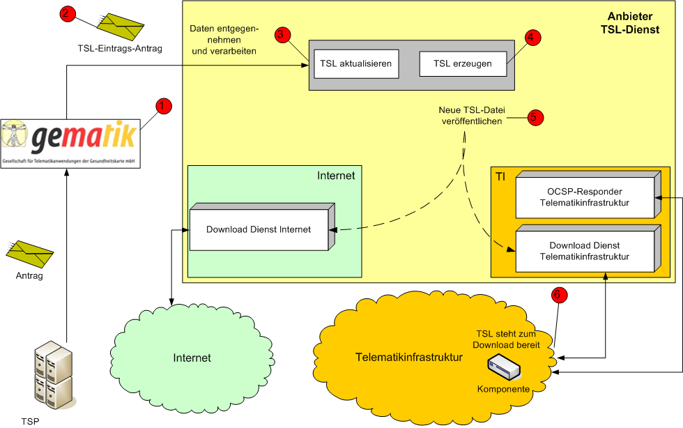
Abbildung 1: Ablauf des Eintrags in TSL
Die Kernfunktionen des TSL-Dienstes sind im Kapitel 4 „Zerlegung des Produkttyps“ beschrieben.
In der Abbildung 1 ist der Kernprozess zur Registrierung (Eintrag in die TSL) eines TSP und seiner Dienste eingezeichnet. In der Produktivumgebung ist ein solcher Eintrag die technische Abbildung des Abschlusses eines erfolgreich verlaufenen Zulassungsverfahrens. Kurz dargestellt sehen diese Prozesse folgendermaßen aus:
Der Ablauf beginnt mit dem Antrag eines TSP an die gematik (Schritt 1). Die gematik erstellt einen TSL-Eintragsantrag (Schritt 2). Der Anbieter des TSL-Dienstes nimmt diese Daten entgegen und verarbeitet sie (Schritt 3). Im nächsten Schritt erzeugt der Anbieter des TSL-Dienstes eine aktualisierte TSL-Datei mit einem neuen Eintrag. Anschließend wird sie zum Download zur Verfügung gestellt (Schritt 5). Die Komponenten der TI können die aktualisierte TSL-Datei herunterladen und validieren (Schritt 6).
Der Vertrauensraum der TI sah bisher nur die Verwendung von RSA-2048 als Schlüsselalgorithmus vor. Die TSL enthielt daher nur RSA-Zertifikate.
Im Zuge der ECC-Migration müssen alle Produkttypen so umgestellt werden, dass sie neben RSA-2048 auch ECC-256 unterstützen (vgl. gemSpec_Krypt#Kap.5). Daher wird neben der bisher vorhandenen reinen RSA-basierten TSL (im Folgenden „TSL(RSA)“ genannt) eine zweite TSL bereitgestellt, die sowohl die neuen ECDSA-basierten Zertifikate als auch aus Rückwärtskompatibilitäts-Gründen die weiterhin benötigten RSA-basierten Zertifikate enthält. Diese zweite neue TSL wird im Folgenden als „TSL(ECC-RSA)“ bezeichnet.
Bis zum vollständigen Abschluss der ECC-Migration werden beide TSL-Varianten vom TSL-Dienst bereitgestellt. Technisch sind die beiden Varianten unabhängig voneinander. Der Übergang des Vertrauensraumes von RSA auf ECC+RSA geschieht dabei durch Cross-Zertifizierung der entsprechenden TSL-Signer-CA-Zertifikate.
Neben dem Download-Punkt für die TSL(RSA) gibt es einen weiteren Download-Punkt für die TSL(ECC-RSA). Die TSL(RSA) wird weiterhin mit einem RSA-basierten Zertifikat signiert. Die TSL(ECC-RSA) erhält eine Signatur auf ECDSA-Basis.
Produkttypen, die ausschließlich RSA-Zertifikate prüfen, verwenden die TSL(RSA). Alle Produkttypen, die ECC-Zertifikate prüfen, müssen die TSL(ECC-RSA) verwenden.
Alle Beschreibungen und Anforderungen, die sich im Folgenden an eine TSL richten, sind sowohl für die TSL(RSA) als auch die TSL(ECC-RSA) zu berücksichtigen und umzusetzen. Wenn im Folgenden von TI-Vertrauensraum gesprochen wird, dann handelt es sich sowohl um den Vertrauensraum (RSA) als auch den Vertrauensraum (ECC-RSA). Beide sind durch ihre jeweiligen Vertrauensanker definiert:
Ein Produkt befindet sich immer entweder im Vertrauensraum (RSA) oder im Vertrauensraum (ECC-RSA).
Die Akteure und Rollen sind im Konzept PKI der TI-Plattform beschrieben [gemKPT_PKI_TIP#2.7]. Im Betrieb des TSL-Dienstes gehören hierzu:
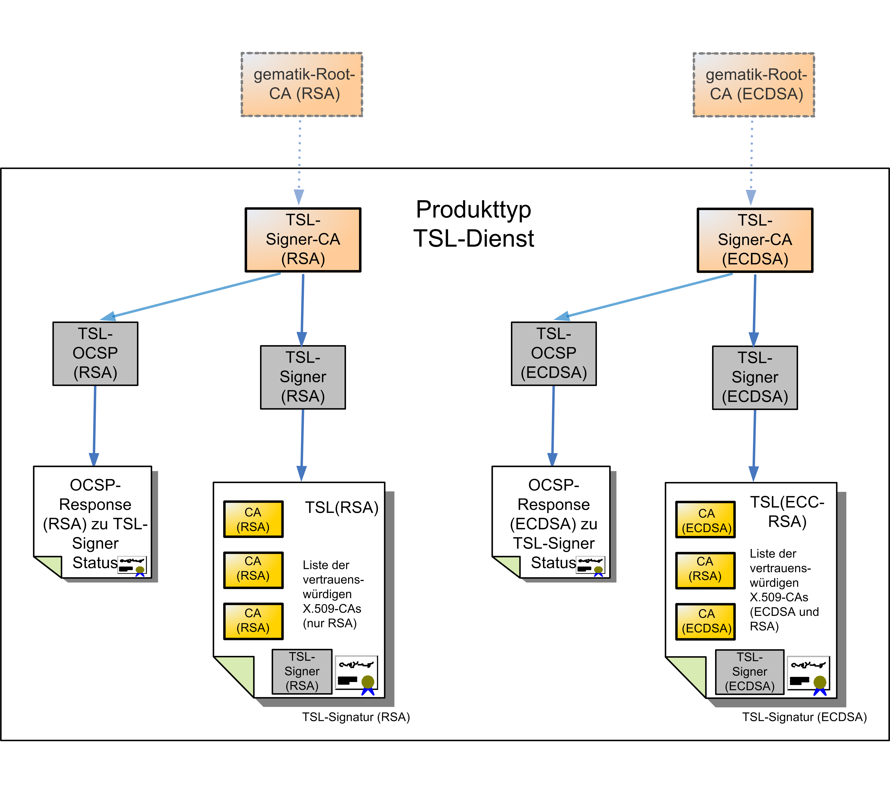
Abbildung 2: Zertifikate und Signaturen
Der Anbieter des TSL-Dienstes verwaltet das Schlüsselpaar der TSL-Signer-CA. Dieses ist von der gematik-Root-CA (nonQES) zertifiziert. Dabei wird je eine TSL-Signer-CA für den Schlüsselalgorithmus RSA und eine für ECDSA bereitgestellt.
Die TSL-Signer-CA stellt das Zertifikat des TSL-Signers und des OCSP-Signers des TSL-Dienstes aus. Der TSL-Signer signiert die Liste der vertrauenswürdigen X.509-Dienste, die Trustservice Status List (TSL). Dabei wird zum Signieren der bisher vorhandenen TSL(RSA) ein TSL-Signer aus der TSL-Signer-CA (RSA) verwendet. Die TSL(ECC-RSA) verwendet einen TSL-Signer aus der TSL-Signer-CA (ECDSA).
Das OCSP-Signer-Zertifikat der jeweiligen Schlüsselgeneration wird gemäß [RFC6960] von der TSL-Signer-CA bereitgestellt. Der TSL-OCSP-Responder der jeweiligen Schlüsselgeneration signiert die Statusauskünfte zum TSL-Signer-Zertifikat in Form von OCSP-Responses.
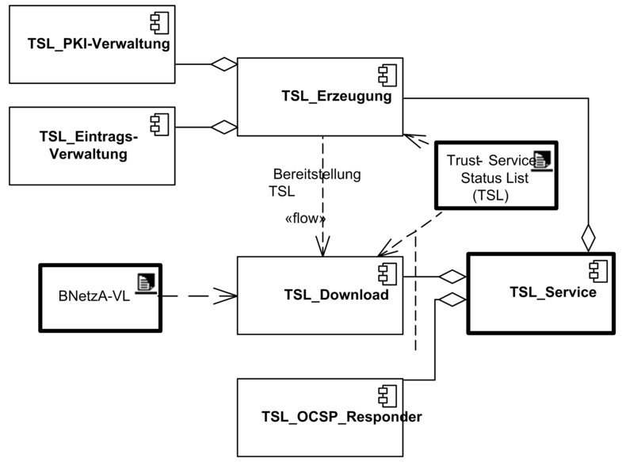
Abbildung 3: Komponenten des TSL-Dienstes
Der TSL-Dienst aggregiert die folgenden funktions-spezifischen Komponenten:
TSL_Download, zur Bereitstellung der Vertrauensliste der Telematikinfrastruktur (TSL) und der Vertrauensliste der Bundesnetzagentur (BNetzA-VL) .
TSL_OCSP_Responder, um die Gültigkeit des TSL-Signer-Zertifikats prüfbar zu halten.
TSL_Erzeugung, die TSL wird periodisch in (von der gematik) festgelegten Intervallen oder bei Bedarf auch ad hoc erzeugt. Anstehende Aktualisierungs-Requests müssen dabei in die TSL integriert werden. Die Erzeugung beinhaltet auch die Signatur der TSL. Die Komponente TSL_Erzeugung besteht aus den zwei im Folgenden dargelegten Teil-Komponenten:
TSL_Eintragsverwaltung, jeder TSP muss gemäß [gemSpec_X.509_TSP] von der gematik zugelassen werden, bevor er in der TSL der Produktivumgebung registriert wird. Auch die Eintragung seiner Dienste (CA, OCSP, CRL) muss beantragt und zugelassen werden.
Des Weiteren muss die gematik auch in der Lage sein, TSPs und ihre Dienste in der TSL zeitnah zu sperren.
Gemäß der Funktionalität TSL_Eintragsverwaltung stellt der Anbieter des TSL-Dienstes die notwendigen Tools zur Verfügung und unterstützt dadurch den Beantragungsprozess. Diese Tools beinhalten die Bereitstellung eines Management-Clients für die gematik, um TSL-Eintragsanträge an den Anbieter des TSL-Dienstes zu schicken. Diese dienen dazu Einträge in die TSL hinzuzufügen, zu verwalten.
TSL_PKI-Verwaltung, diese Teil-Komponente erlaubt die Verwaltung von PKI-spezifischen Anforderungen wie bspw. Schlüssel- und Zertifikats-Management. Dies beinhaltet daneben auch die Möglichkeit eines TI-Vertrauensankerwechsels.
Die Funktionsmerkmale dieser Komponenten werden in Kapitel 6 detailliert beschrieben und spezifiziert.
Der Anbieter des TSL-Dienstes muss den kontinuierlichen und sicheren Betrieb der Komponenten des TSL-Dienstes gewährleisten. Die Anforderungen daran entsprechen teilweise denjenigen an den Betrieb einer CA in der TI für die Ausgabe von nicht-qualifizierten Zertifikaten (siehe [gemRL_TSL_SP_CP]).
Neben der Bereitstellung der TSL(RSA) muss im Rahmen der ECC-Migration parallel eine TSL(ECC-RSA) vom TSL-Dienst bereitgestellt werden. Siehe dazu die Hinweise in Kap.2.3. Alle in diesem Dokument beschriebenen Festlegungen und Anforderungen beziehen sich sowohl auf die Bereitstellung der TSL(RSA) als auch die Bereitstellung der TSL(ECC-RSA).
Die Veröffentlichung von Informationen steht im Verantwortungsbereich des Anbieters des TSL-Dienstes.
TIP1-A_3949
Der Anbieter des TSL-Dienstes MUSS geschäftskritische Informationen, wie z. B. eine Betriebseinstellung, unverzüglich gegenüber der gematik bekannt geben.
<=TIP1-A_3950
Der Anbieter des TSL-Dienstes MUSS unverzüglich Änderungen an der Architektur und den organisatorischen Abläufen gegenüber der gematik bekannt geben, sofern die Sicherheit verringert oder das Außenverhalten verändert wird.
<=TIP1-A_3951
Der Anbieter des TSL-Dienstes MUSS nach Aufforderung der gematik technisch relevante Dokumentationen, das Sicherheitskonzept und das Betriebskonzept zur Prüfung durch die gematik vorlegen.
<=TIP1-A_3953
Der Anbieter des TSL-Dienstes MUSS jede Änderung an seiner Gesellschafterstruktur unverzüglich der gematik anzeigen.
<=TIP1-A_3954
Der Anbieter des TSL-Dienstes MUSS sein Rollenkonzept umsetzen, und die operative Umsetzung der Vorgaben im Rahmen seines betreiberspezifischen Sicherheitskonzepts darlegen.
<=TIP1-A_3955
Der Anbieter des TSL-Dienstes MUSS seine Arbeit durch eine revisionssichere Protokollierung gemäß den gesetzlichen und vertraglichen Regelungen nachweisen.
<=TIP1-A_3956
Der Anbieter des TSL-Dienstes MUSS auf Antrag der gematik Einblick in die revisionssichere Protokollierung gewähren.
<=In Kapitel 5.5 wird ein Backup-HSM gefordert und es werden die technischen Anforderungen daran spezifiziert.
Anforderungen an Standards und Sicherheitsmaßnahmen für kryptographische Module sind im Abschnitt 5.5.2.1 enthalten.
TIP1-A_5782
Der Anbieter des TSL-Dienstes MUSS der gematik das Schlüsselmaterial, welches für das Ausstellen von TSL-Signer-Zertifikaten notwendig ist, gemäß dem zwischen BSI und gematik abgestimmten Verfahren übergeben.
<=TIP1-A_3957
Der Anbieter des TSL-Dienstes MUSS das Backup-HSM an einem sicheren Ort außerhalb des primären Standorts aufbewahren.
<=TIP1-A_3958
Der Anbieter des TSL-Dienstes MUSS in seinem betreiberspezifischen Sicherheitskonzept beschreiben, wie sichergestellt wird, dass ein Zugriff auf das Backup-HSM und sein Freischalten im Rahmen des Einbringens in das eigentliche Produktivsystem nur unter Wahrung des Vier-Augen-Prinzips möglich ist.
<=TIP1-A_3959
Der Anbieter des TSL-Dienstes MUSS für die im Rahmen des Betriebs benötigte Hardware, Software und den Datenbestand ein Backup-Konzept erstellen und umsetzen.
<=TIP1-A_3960
Der Anbieter des TSL-Dienstes MUSS eine Rollenzuordnung erstellen und umsetzen, so dass zu jeder der relevanten Rollen mindestens ein verantwortlicher Mitarbeiter sowie ein Stellvertreter benannt werden und die Rollenzuordnung initial und fortlaufend bei Änderungen der gematik mitgeteilt wird.
<=(Siehe Kapitel 5.4.2.1 und 5.4.2.2)
TIP1-A_3961
Der Anbieter des TSL-Dienstes MUSS eine Rollenzuordnung derart umsetzen, dass zu jedem Zeitpunkt der festgelegten Betriebszeit für jede der relevanten Rollen mindestens ein für diese Rolle verantwortlicher Mitarbeiter bzw. sein Stellvertreter kurzfristig (höchstens eine Stunde Wartezeit) erreichbar sind.
<=(Siehe Kapitel 5.4.2.1 und 5.4.2.2)
TIP1-A_3962
Der Anbieter des TSL-Dienstes MUSS bei der Zuordnung von Rollen zu Personen (für Aktivitäten mit gefordertem Vier-Augen-Prinzip) gewährleisten, dass eine einzelne Person nicht zwei Rollen ausübt und somit Zugriffe auf das HSM unter Umgehung des Vier-Augen-Prinzips für diese einzelne Person ermöglicht werden.
<=(Siehe Kapitel 5.4.2.2)
TIP1-A_3963
Der Anbieter des TSL-Dienstes MUSS sicherstellen, dass das zu realisierende System einschließlich der HSM in einem kontrollierten Bereich der Betriebsstätte untergebracht ist und dass der Zugang zu diesem Bereich nur für berechtigte Personen möglich ist.
<=TIP1-A_3964
Der Anbieter des TSL-Dienstes MUSS im Rahmen der Zugangskontrolle gewährleisten, dass den Mitarbeitern der gematik bzw. durch die gematik beauftragten Personen nach Ankündigung (ggf. in Begleitung eines Mitarbeiters des Betreibers des TSL-Dienstes) Zugang zu den für die TSL-Erzeugung im Kontext der TI-relevanten Systemen gewährt wird und genaue Regelungen (Vorlaufzeit für die Ankündigung, Mitteilung der berechtigten Personen) festlegen.
<=TIP1-A_3967
Der Anbieter des TSL-Dienstes MUSS sicherheitskritische Bestandteile der Systemumgebung informationstechnisch trennen. Falls eine Online-Verbindung zu den sicherheitskritischen Bestandteilen der Systemumgebung besteht, muss durch technische Maßnahmen sichergestellt werden, dass schreibende Zugriffe auf sicherheitskritische Systembestandteile unterbunden werden.
<=TIP1-A_3968
Der Anbieter des TSL-Dienstes MUSS sicherstellen, dass die Internetseite zur Bereitstellung der öffentlichen Schlüssel sowie der File- bzw. Web-Server für den Download der Dateien vor Manipulationen entsprechend dem BSI-Grundschutz-Baustein B 5.4 "Webserver" geschützt wird.
<=TIP1-A_3969
Der Anbieter des TSL-Dienstes MUSS sicherstellen, dass sicherheitskritische Bestandteile des Systems in einem kontrollierten Bereich betrieben werden.
<=TIP1-A_3970
Der Anbieter des TSL-Dienstes MUSS sicherstellen, dass Vertreter der gematik auf Antrag uneingeschränkten Zugang zu den Teilen der Betriebsstätte haben, die für den Betrieb im Kontext der TI relevant sind.
<=TIP1-A_5382
Der Anbieter des TSL-Dienstes MUSS sicherstellen, dass alle Zugriffe auf das HSM und die direkt zur Administration des HSM verwendeten IT-Systeme im Vier-Augen-Prinzip erfolgen.
<=Diese Spezifikation enthält keine Anforderungen an bauliche Sicherheitsmaßnahmen.
Der Betrieb des TSL-Dienstes erfolgt anhand von dokumentierten Verfahrensvorschriften im Rahmen des Sicherheitskonzepts.
Um einen ordnungsgemäßen und revisionssicheren Betrieb des TSL-Dienstes zu gewährleisten, ist u. a. eine entsprechende Aufgabenverteilung und Funktionstrennung vorzunehmen.
TIP1-A_3971
Der Anbieter des TSL-Dienstes MUSS eine klare organisatorische Trennung zwischen seinen verschiedenen Aufgaben und Rollen mit Interessenskonfliktpotential in der TI gemäß Beurteilung des Sicherheitsbeauftragten umsetzen und dokumentieren.
<=TIP1-A_3972
Der Anbieter des TSL-Dienstes MUSS in seinem Organisationskonzept die relevanten Rollen unter Beachtung von Tab_PKI_702 unterscheiden.
<=Tabelle 1: Tab_PKI_702 Beschreibung der Rollen beim Anbieter des TSL-Dienstes
| Rolle |
Funktion |
Kürzel |
|---|---|---|
| TSL-Eintrags-Dienst |
Schnittstelle zur gematik für Annahme von TSL-Eintragsanträgen seitens der gematik |
|
| TSL-Eintrags-Service |
Schnittstelle zur gematik für Annahme von TSL-Eintragsanträgen seitens der gematik, Prüfung der notwendigen Unterlagen |
TES |
| TSL-Eintrags-Registrator |
Prüfung des TSL-Eintragsantrags hinsichtlich Vollständigkeit und Korrektheit Archivierung von Dokumenten, falls erforderlich Freigabe von TSL-Eintragsanträgen |
TER |
| Registrierungsdienst |
Schnittstelle zur gematik für Annahme von Anträgen für Generierung von Schlüsselpaaren (und Zertifikaten oder Zertifikatsanträgen), Prüfung der notwendigen Unterlagen und Annahme von Sperranträgen |
|
| Zertifikatsservice |
Entgegennahme von Schlüsselgenerierungs-Anträgen und Sperranträgen Identifizierung, Authentifizierung und Prüfung der Autorisierung der Mitarbeiter der gematik Verifikation der Dokumente |
ZS |
| Zertifikats-Registrator |
Prüfung des Zertifikatsantrags hinsichtlich Vollständigkeit und Korrektheit Archivierung von Dokumenten, falls erforderlich Freigabe von Anträgen für Schlüsselgenerierung und Sperrantrag |
RG |
| Zertifizierung |
Ausstellen von Zertifikat, Erzeugung und Verwahrung der TSP-Schlüssel |
|
| TSL-SP-Mitarbeiter |
verantwortlich für die Anwendung und Lagerung von elektronischen Datenträgern, auf denen die privaten Schlüssel gespeichert sind |
CAO1 |
| PIN-Geber |
Kenntnis eines Geheimnisses (z. B. Passwort) zur Anwendung der privaten Schlüssel |
CAO2 |
| Systembetreuung |
Administration der IT-Systeme und des täglichen Betriebs (Backups usw.) |
|
| System- und Netzwerk-Administrator |
Installation, Konfiguration, Administration und Wartung der IT- und Kommunikationssysteme. vollständige Kontrolle über die eingesetzte Hard- und Software, jedoch kein Zugriff auf und keine Kenntnis von kryptographischen Schlüsseln und deren Passwörtern für Zertifizierungsprozess, Zertifikats- und Sperrmanagement sowie ausschließliche Kenntnis der Boot- und Administrator-Passwörter der Systeme |
SA |
| Systemoperator |
Betreuung der Anwendungen (Datensicherung und -wiederherstellung, Web-Server, Zertifikats- und Sperrmanagement) |
SO |
| Überwachung des Betriebs |
keine Funktion im operativen Betrieb, zuständig für die Durchsetzung der im Sicherheitskonzept festgelegten Grundsätze |
|
| Revision |
Durchführung der betriebsinternen und externen Audits, Überwachung und Einhaltung der Datenschutzbestimmungen |
R |
| Sicherheitsbeauftragter |
Definition und Einhaltung der Sicherheitsbestimmungen Überprüfung der Mitarbeiter Vergabe von Berechtigungen Ansprechpartner für sicherheitsrelevante Fragen |
ISO |
Ein Mitarbeiter kann auch in mehr als einer Rolle auftreten. Dabei ist jedoch zu beachten, dass es Rollenunverträglichkeiten (Abschnitt 5.4.2.3) gibt. Ebenso ist es möglich, dass Funktionen einer Rolle auf mehrere Mitarbeiter mit dieser Rolle verteilt werden.
TIP1-A_3973
Der Anbieter des TSL-Dienstes MUSS die Belegung der Rollen mit ihren benannten Mitarbeitern der gematik mitteilen.
<=TIP1-A_3974
Der Anbieter des TSL-Dienstes MUSS die Rollenzuordnung der folgenden Tätigkeiten gemäß dem Vier-Augen-Prinzip umsetzen:
(a) Sämtliche HSM-Operationen für TSL-Signer-CA und TSL-Signer
(b) Schlüssellebenszyklus-Operationen für OCSP-Responder
(c) Schlüsselhinterlegung
(d) Ausstellen des TSL-Signer-Zertifikats
(e) Sperren des TSL-Signer-Zertifikats
(f) Technische Vergabe von Berechtigungen
(g) Registrierungsdienst
(h) TSL-Eintrags-Dienst
TIP1-A_3975
Der Anbieter des TSL-Dienstes MUSS bei der Aufteilung der Rollen auf Mitarbeiter unter Beachtung von Tab_PKI_702 und Tab_PKI_703 sicherstellen, dass einer Person keine miteinander unverträglichen Rollen zugewiesen werden.
<=Tabelle 2: Tab_PKI_703 Rollenausschlüsse
| Rolle |
Unverträglich mit |
|---|---|
| R - Revision |
TER, TES, ZS, RG, CAO1, CAO2, SA, SO |
| ISO - Sicherheitsbeauftragter |
TER, TES, ZS, RG, CAO1, CAO2, SA, SO |
| TES - TSL-Eintrags-Service |
R, ISO, SA, SO |
| TER - TSL-Eintrags-Registrator |
R, ISO, SA, SO |
| ZS - Zertifikatsservice |
R, ISO, SA, SO |
| RG - Zertifikats-Registrator |
R, ISO, SA, SO |
| SA - Systemadministrator |
R, ISO, TER, TES, ZS, RG, CAO1 |
| SO - Systemoperator |
R, ISO, TER, TES, ZS, RG, CAO1 |
| CAO1 TSL-SP-Mitarbeiter |
R, ISO, CAO2, SA, SO |
| CAO2 PIN-Geber |
R, ISO, CAO1 |
TIP1-A_3976
Der Anbieter des TSL-Dienstes MUSS sicherstellen, dass freie Mitarbeiter die gleichen Sicherheitsanforderungen erfüllen, wie festangestellte Mitarbeiter.
<=TIP1-A_3977
Der Anbieter des TSL-Dienstes MUSS sicherstellen, dass seine Mitarbeiter in
(a) das betreiberspezifische Betriebskonzept,
(b) das Rollenkonzept,
(c) das betreiberspezifische Sicherheitskonzept,
(d) die Prozessbeschreibungen und Formulare für den regulären Betrieb,
(e) die Verfahrensanweisungen für den Notfall,
(f) die Dokumentation der IT-Systeme,
(g) die Bedienungsanleitungen für die eingesetzte Software und
(h) die Datenschutzerklärung (falls vorhanden)
Einsicht erhalten.
TIP1-A_3978
Der Anbieter des TSL-Dienstes MUSS die folgenden technischen Ereignisse protokollieren:
(a) Bootvorgänge der Hardware,
(b) Installation und Konfiguration von Software,
(c) Fehlgeschlagene Login-Versuche,
(d) Durchführung von Änderungen an Zugriffsrechten
TIP1-A_3979
Der Anbieter des TSL-Dienstes MUSS die folgenden organisatorischen Ereignisse protokollieren:
(a) Vergabe und Entzug von Berechtigungen,
(b) Änderungen des betreiberspezifischen Betriebshandbuches und der korrespondierenden Richtlinien,
(c) Änderungen an Rollendefinitionen,
(d) Änderungen an Prozessbeschreibungen,
(e) Wechsel von Verantwortlichkeiten,
(f) Ausscheiden von Mitarbeitern
TIP1-A_3980
Der Anbieter des TSL-Dienstes MUSS mindestens die folgenden wichtigen TSL-spezifischen Ereignisse protokollieren:
(a) Das Generieren eines neuen Schlüsselpaares
(b) Die Aktivierung eines Schlüsselpaares
(c) Das Generieren, Signieren und Bereitstellen einer neuen TSL
(d) Das Generieren eines neuen TSP Eintrags, Signieren und Bereitstellen der TSL
TIP1-A_3981
Der Anbieter des TSL-Dienstes MUSS für die wichtigen TSL-spezifischen Ereignisse mindestens die folgenden Angaben protokollieren:
(a) Das Datum des Auftrags der gematik
(b) Angaben zur eindeutigen Identifizierung aller an den Schritten und Teilschritten der Ereignisse beteiligten Personen
(c) Das technische Ergebnis eines Ereignisses
TIP1-A_3982
Der Anbieter des TSL-Dienstes MUSS Protokolldaten mindestens entsprechend den gesetzlichen und vertraglichen Regelungen aufbewahren.
<=TIP1-A_3983
Der Anbieter des TSL-Dienstes MUSS sicherstellen, dass Protokolldaten trotz privilegierter Berechtigungen der System- und Netzadministratoren gegen unberechtigten Zugriff, Löschung und Manipulation dauerhaft geschützt werden.
<=Durch die regelmäßige Speicherung nach Kapitel 5.4.5 können solche Daten dauerhaft geschützt werden.
TIP1-A_3984
Der Anbieter des TSL-Dienstes MUSS eine sichere Archivierung aller relevanten Daten im Betriebsprozess realisieren. Dazu gehören:
(a) Alle Versionen der TSL,
(b) Alle Anträge, Aufträge und Registrierungsunterlagen von der gematik,
(c) Zertifikate des Anbieters des TSL-Dienstes und
(d) Protokolldaten.
TIP1-A_3985
Der Anbieter des TSL-Dienstes MUSS sicherstellen, dass der Schlüsselwechsel anhand dokumentierter Prozesse erfolgt.
<=TIP1-A_3986
Der Anbieter des TSL-Dienstes MUSS im Rahmen der Notfallplanung gewährleisten, dass
(a) für den Fall einer Kompromittierung oder eines Desasters Prozesse zur Aufrechterhaltung des Betriebs dokumentiert werden und
(b) die Bewertung der Sicherheitslage durch den Sicherheitsbeauftragten vollzogen wird.
Die Anforderungen an Notfallpläne und die Aufrechterhaltung des Regelbetriebs nach dem Eintreten eines Notfalls bei dem Anbieter des TSL-Dienstes sind in [gemSpec_DS_Anbieter] enthalten.
Für den Fall einer Kompromittierung der TSL-Signer-CA ist die Authentizität der TSL-Datei nicht mehr gegeben. Es handelt sich um einen sicherheitskritischen Incident, welcher im Rahmen des TI-übergreifenden Notfallmanagements gemäß [gemRL_Betr_TI] koordiniert wird. Details zu Notfallplanung in Bezug auf sicherheitskritische Incidents siehe [gemKPT_PKI_TIP] Kap. 2.3.3.5. Mittels TI-Vertrauensankerwechsel (siehe Kapitel 6.2.2 und GS-A_4643 aus [gemSpec_PKI]) kann deshalb auch über die kompromittierte CA eine neue, umkompromittierte TSL-Signer-CA in Kraft gesetzt werden, und der Weiterbetrieb der TI kann (zumindest provisorisch bis zum Ergreifen weiterer Maßnahmen) aufrechterhalten werden.
Bei einer ungeplanten Übernahme des TSL-Dienstes muss der neue Anbieter das Schlüsselpaar oder die Schlüsselpaare und dazugehörige TSL-Signer-CA-Zertifikate des bisherigen Anbieters des TSL-Dienstes in sein System importieren können und dadurch den laufenden Betrieb übernehmen. In der Regel erhält der neue Anbieter dazu das HSM des bisherigen Anbieters des TSL-Dienstes.
Das HSM muss in das System des neuen Anbieters eingebunden werden können, das heißt, das Schlüsselmaterial und die Zertifikate werden extrahiert und in das HSM des neuen Anbieters importiert (siehe dazu auch Kapitel 5.5.1 und 5.5.2 insbesondere 5.5.2.1).
TIP1-A_3987
Der Anbieter des TSL-Dienstes MUSS bei der ungeplanten Einstellung seines Betriebes das für den Betrieb erforderliche Schlüsselmaterial in Form des HSMs herausgeben. Dabei MUSS er die Autorisierung der berechtigten Mitarbeiter der gematik prüfen. Der Prozess dieser Prüfung MUSS in seinem betreiberspezifischen Sicherheitskonzept dokumentiert sein. Der Anbieter des TSL-Dienstes MUSS bei einer Herausgabe des Schlüsselmaterials die darin beschriebenen Schritte durchführen.
<=TIP1-A_3988
Der Anbieter des TSL-Dienstes DARF NICHT ohne schriftlichen Antrag der gematik eine Herausgabe des Schlüsselmaterials der TSL-Signer-CA durchführen.
<=TIP1-A_3989
Der Anbieter des TSL-Dienstes MUSS die Beendigung seiner Dienstleistungen im Kontext der TI als Prozess dokumentieren und die Beendigung seiner Dienstleistungen der gematik unverzüglich anzeigen.
<=TIP1-A_3990
Der Anbieter des TSL-Dienstes MUSS den Fortbestand der Archive und die Abrufmöglichkeit aller ausgestellten TSL-Dateien sowie aller verwendeten Zertifikate für den zugesicherten Aufbewahrungszeitraum sicherstellen.
<=TIP1-A_3991
Der Anbieter des TSL-Dienstes MUSS die mit der gematik vereinbarte Ankündigungsfrist bei der Einstellung des Betriebs einhalten.
<=TIP1-A_3992
Der Anbieter des TSL-Dienstes MUSS die Einstellung des Betriebs schriftlich gegenüber der gematik ankündigen.
<=TIP1-A_3993
Der Anbieter des TSL-Dienstes MUSS die TSL-Signer-CA vollständig offline initialisieren und betreiben.
<=A_17658
Der TSL-Dienst MUSS für die Schlüsselgenerationen RSA und ECDSA je eine separate TSL-Signer-CA betreiben und das CA-Zertifikat von der gematik-Root-CA der jeweiligen Schlüsselgeneration signieren lassen.
<=
TIP1-A_3994
Der Anbieter des TSL-Dienstes MUSS sicherstellen, dass TSL-Signer-CA, TSL-Signer und OCSP-Responder nicht dasselbe Schlüsselpaar verwenden.
<=TIP1-A_3995
Der Anbieter des TSL-Dienstes MUSS sicherstellen, dass die technischen Sicherheitsmaßnahmen zur Erzeugung und Installation von Schlüsselpaaren die Rahmenbedingungen des eigenen, betreiberspezifischen Sicherheitskonzeptes erfüllen und sich am aktuellen Stand der Technik orientieren.
<=TIP1-A_3996
Der Anbieter des TSL-Dienstes MUSS Signaturschlüssel in einem von einer akkreditierten Evaluierungsstelle geprüften HSM oder alternativ in einer Chipkarte mit vergleichbarer geforderter Zertifizierungstiefe erzeugen.
<=Die für HSM geforderte Zertifizierungstiefe wird im Abschnitt 5.5.2.1 definiert.
TIP1-A_3997
Der Anbieter des TSL-Dienstes MUSS ein Backup-HSM zum sicheren Export bzw. Import von privaten Schlüsseln verwenden, wobei zu beachten ist:
(a) Primäres HSM und Backup-HSM MÜSSEN die gleichen Sicherheitsanforderungen erfüllen,
(b) zwischen primärem HSM und Backup-HSM MUSS ein kryptographisch gesicherter Transportkanal hergestellt werden, um den privaten Schlüssel aus dem einen HSM sicher zu exportieren und in das andere HSM zu importieren.
TIP1-A_3998
Der Anbieter des TSL-Dienstes MUSS sicherstellen, dass alle eingesetzten HSM eine Funktion unterstützen, mit der ein vorhandenes Schlüsselpaar innerhalb des HSM sicher gelöscht werden kann, wobei der sichere Löschvorgang durch ein Überschreiben mit einem vorgegebenen Wert oder durch das interne dauerhafte Sperren aller Zugriffe auf den Schlüssel realisiert werden kann.
<=TIP1-A_3999
Der Anbieter des TSL-Dienstes MUSS sicherstellen, dass das Generieren eines neuen Schlüsselpaares und das Löschen eines Schlüsselpaares nur nach erfolgreicher, gemeinsamer Authentisierung zweier hierfür autorisierter Nutzer (Vier-Augen-Prinzip) durch das Verifizieren einer PIN oder ein gleichwertiges Verfahren ausführbar sind.
<=TIP1-A_4000
Der Anbieter des TSL-Dienstes MUSS sicherstellen, dass alle kryptographischen Berechnungen mit dem privaten Schlüssel für das Erstellen eines Zertifikats innerhalb des HSM erfolgen, wobei das HSM diese Berechnungen nur nach erfolgreicher, gemeinsamer Authentisierung zweier hierfür autorisierter Nutzer (Vier-Augen-Prinzip) durch das Verifizieren einer PIN oder ein gleichartiges Verfahren durchführen darf.
<=TIP1-A_4001
Der Anbieter des TSL-Dienstes MUSS sicherstellen, dass die Nutzung des HSM revisionssicher protokolliert wird, insbesondere welche Rolle/Person zu welchem Zeitpunkt für welche Funktion das HSM genutzt hat und für welche Profile das HSM konfiguriert ist. Der Anbieter des TSL-Dienstes MUSS sicherstellen, dass auch die Nutzung und die Übergabe zur Verwahrung des Backup-HSM revisionssicher protokolliert werden.
TIP1-A_4002
Der Anbieter des TSL-Dienstes MUSS sicherstellen, dass bei der Generierung von Schlüsseln jeweils der aktuelle Stand der Technik berücksichtigt wird.
<=TIP1-A_4003
Der Anbieter des TSL-Dienstes MUSS die verwendeten Schlüsselpaare der TSL-Signer-CA, des TSL-Signers und des OCSP-Responders auswechseln, wenn
(a) organisatorische Regelungen der gematik dies erfordern,
(b) die maximale Verwendungsdauer für ein Schlüsselpaar erreicht wurde und
(c) wenn ein aktuell verwendetes Schlüsselpaar kompromittiert wurde.
Vorgaben zur maximalen Verwendungsdauer von Schlüsseln in [gemSpec_Krypt#2].
TIP1-A_4005
Der Anbieter des TSL-Dienstes MUSS die Sicherung des privaten Schlüssels nach dem aktuellen Stand der Technik gewährleisten und die Anforderungen an kryptographische Module im Rahmen ihres betreiberspezifischen Sicherheitskonzeptes definieren.
<=TIP1-A_4006
Der Anbieter des TSL-Dienstes MUSS gewährleisten, dass
(a) alle kryptographischen Berechnungen mit einem privaten Schlüssel intern in einem Hardware-Sicherheitsmodul (HSM) durchgeführt werden und
(b) private Schlüssel des Anbieters des TSL-Dienstes nicht im Klartext aus dem HSM exportiert werden.
TIP1-A_4007
Der Anbieter des TSL-Dienstes MUSS Hardware-Sicherheitsmodule (HSM) einsetzen, die mindestens Funktionen
(a) zur Generierung eines neuen Schlüsselpaares,
(b) zur Aktivierung eines Schlüsselpaares,
(c) zum kryptographisch abgesicherten Import und Export eines privaten Schlüssels,
(d) zum sicheren (physikalischen) Löschen eines Schlüsselpaares,
(e) zur m-von-n-Aktivierung und
(f) zum Erstellen eines Zertifikats mit interaktiv einzugebenden Zertifikatsdaten beinhalten.
TIP1-A_4008
Der Anbieter des TSL-Dienstes MUSS ein Hardware-Sicherheitsmodul (HSM) einsetzen, das mehrere Schlüsselpaare speichern kann und über eine Funktion zur Aktivierung eines einzelnen, spezifischen Schlüsselpaares verfügt, dass nach erfolgter Auswahl zur Erzeugung von Zertifikaten verwendet wird.
<=TIP1-A_4010
Der Anbieter des TSL-Dienstes MUSS für alle eingesetzten Hardware-Sicherheitsmodule (HSM) sicherstellen, dass diese nach einer der folgenden Kombinationen aus Evaluierungsschema und Prüftiefe (sowie einem fachlich geeignetem Schutzprofil) oder einem äquivalenten Zertifizierungsstandard evaluiert wurden:
(a) FIPS 140-2 Level 3,
(b) CC EAL4+ mit Prüfung gegen hohes Angriffspotenzial oder
(c) ITSEC E3 der Stärke „hoch“.
TIP1-A_4011
Der Anbieter des TSL-Dienstes MUSS die PKCS#11-Kommandos für verschlüsselten Export des Schlüsselmaterials der TSL-Signer-CA unterstützen.
<=TIP1-A_4012
Der Anbieter des TSL-Dienstes DARF NICHT den privaten Schlüssel eines Schlüsselpaars ungeschützt bei Dritten hinterlegen.
<=Verantwortlich für die Vernichtung sind die dafür bestimmten Rollen „ISO“ und „CAO1“ (siehe Tab_PKI_702).
Die Anforderungen an Archivierung öffentlicher Schlüssel bei dem Anbieter des TSL-Dienstes werden als Teil der Anforderungen an die Schlüsselverwaltung in [gemSpec_DS_Anbieter] beschrieben. Diese Spezifikation enthält keine darüber hinausgehenden Anforderungen.
Die maximale Gültigkeitsdauer von Zertifikaten ist in [gemRL_TSL_SP_CP#7.3.2] definiert. auf 5 (Endbenutzer-) bzw. 8 Jahre (CA-Zertifikate). Diese Vorgaben sind auch für die TSL-Zertifikate umzusetzen.
TIP1-A_4016
Der Anbieter des TSL-Dienstes SOLL die Gültigkeitsdauer des TSL-Signer-Zertifikats auf 5 Jahre ansetzen. Auf Anforderung der gematik SOLL zum Signieren einer TSL die Ausgabe eines TSL-Signer-Zertifikats auch mit kürzerer Laufzeit möglich sein.
<=
TIP1-A_4017
Der Anbieter des TSL-Dienstes MUSS Prozesse für die sichere Übermittlung von Aktivierungsdaten definieren und von seinem Sicherheitsbeauftragten bestätigen lassen.
<=TIP1-A_4018
Der Anbieter des TSL-Dienstes MUSS sicherstellen, dass alle Systemkomponenten der PKI bzw. der TSL-Signatur konform zu den Sicherheitsanforderungen seines betreiberspezifischen Sicherheitskonzepts betrieben werden.
<=TIP1-A_4019
Der Anbieter des TSL-Dienstes MUSS sicherstellen, dass alle sicherheitsrelevanten, technischen Abläufe auf Basis gehärteter Betriebssysteme nach IT-Grundschutz-Katalog ([BSI#B3]) ausgeführt werden.
<=Die Festlegung der Zertifikatsprofile erfolgt in [gemSpec_PKI#5.13].
Tabelle 3: Schnittstellen des TSL-Dienstes
| Funktionsmerkmal |
Schnittstelle |
Kurzbeschreibung |
|---|---|---|
| TSL_ Eintragsverwaltung |
I_TSL-Management |
Technische Schnittstelle zur Verwaltung der TSL-Einträge durch gematik (XML-basiert) |
| P_TSL-Management |
Organisatorische Schnittstelle zur Verwaltung der TSL-Einträge durch gematik |
|
| P_Trust_Approval |
Organisatorische Schnittstelle für einen TSP, um in den Vertrauensraum der TI zu gelangen |
|
| TSL_ PKI-Verwaltung |
P_TSL-PKI-Zertifikats-Management |
Organisatorische Schnittstelle für Schlüssel- und Zertifikatserneuerung |
| P_Trust-Anchor-Change |
Organisatorische Schnittstelle für den TI-Vertrauensankerwechsel |
|
| TSL_ Download |
I_TSL_Download |
Technische Schnittstelle für das Herunterladen der TSL und des TSL-Hashwertes |
| I_BNetzA_VL _Download |
Technische Schnittstelle für das Herunterladen der BNetzA-VL (Vertrauensliste der Bundesnetzagentur) und deren Hashwert |
|
| I_Cert_Download |
Technische Schnittstelle für das Herunterladen des TSL-Signer-CA-Zertifikats |
|
| TSL_ OCSP_ Responder |
I_OCSP_Status_Information |
Technische Schnittstelle für die Statusabfrage an den OCSP-Responder |
| P_Cert_Revocation |
Organisatorische Schnittstelle für Sperrung (Änderung des Status der OCSP-Response) |
Für die Registrierung eines TSP und seiner benötigten Dienste in der TSL der Produktivumgebung muss der TSP ein Zulassungsverfahren durchlaufen. Die Prozesse dieses Verfahrens obliegen der Zulassungs- und Registrierungsstelle der gematik. Sie veranlasst die Eintragung in die TSL nach erfolgreicher Prüfung. Des Weiteren kann die gematik z. B. auch den Widerruf eines TSPs veranlassen, also dessen Ausschluss aus der TSL.
Die Schnittstelle I_TSL-Management unterstützt die Abläufe der organisatorischen Schnittstelle P_TSL-Management und soll eine in technischer Hinsicht reibungslose Verwaltung der TSL-Einträge sicherstellen:
Die Prozesse der TSL-Eintragsverwaltung bedingen, dass eine klar definierte Kommunikation zwischen der gematik und dem Anbieter des TSL-Dienstes stattfindet. Diese besteht aus TSL-Eintragsanträgen, welche seitens der gematik an den Anbieter des TSL-Dienstes geschickt werden und den Antworten dazu.
Dazu wird ein Tool benötigt, welches der gematik erlaubt, die TSL-Eintragsanträge (Aufnahme, Änderung oder Löschen eines TSP oder TSP-Dienstes) zu erstellen.
TIP1-A_4027
Der TSL-Dienst MUSS eine technische Schnittstelle I_TSL-Management bereitstellen, welche die TSL-Eintragsanträge (Aufnahme, Änderung oder Löschen eines TSP oder TSP-Dienstes) der gematik entgegennimmt.
<=TIP1-A_4435
Der TSL-Dienst MUSS die Schnittstelle I_TSL-Management so implementieren, dass diese bei Erhalt eines TSL-Eintragsantrages einen prüffähigen Zeitstempel erstellt.
<=TIP1-A_4028
Der TSL-Dienst MUSS nach erfolgreicher Entgegennahme und nach Verarbeitung eines TSL-Eintragsantrages eine Bestätigung an die gematik senden.
<=TIP1-A_4030
Der Anbieter des TSL-Dienstes MUSS der gematik einen Client für die Schnittstelle I_TSL-Management („I_TSL-Management:Client“) zur Verfügung stellen.
<=TIP1-A_4031
Der I_TSL-Management:Client MUSS sämtliche TSL-Eintragsanträge der gematik an den Anbieter des TSL-Dienstes erzeugen können:
(a) Hinzufügen eines neuen TSP und eines dazugehörigen TSP-Dienstes
(b) Hinzufügen eines zusätzlichen TSP-Dienstes zu einem bestehenden TSP
(c) Ändern eines TSP
(d) Ändern eines TSP-Dienstes
(e) Löschen eines TSP
(f) Löschen eines TSP-Dienstes
(g) Widerruf (auf Status „revoked“ setzen) eines TSP-Dienstes
TIP1-A_4032
Der I_TSL-Management:Client MUSS die Möglichkeit bieten, die TSL-Eintragsanträge direkt im XML-Format gemäß [ETSI_TS_102_231_V3.1.2#AnhangB] zu erstellen und zu bearbeiten.
TIP1-A_4035
Der TSL-Dienst MUSS die aktuelle TSL-Signer-CA als TSP-Dienst in der TSL eintragen.
<=Hinweis:Daraus folgt auch, dass für das TSL-Signer-CA-Zertifikat die Adresse und das Zertifikat des zuständigen OCSP-Responders angegeben werden.
Auf die entsprechende Syntax bzw. erlaubten Werte wird in Kapitel 7.3.2 eingegangen.
Der OCSP-Responder wird in Kapitel 6.4 beschrieben.
A_17664
Der TSL-Dienst MUSS beim Eintragen der Zertifikats-Elemente gemäß TIP1-A_4035 beachten, dass das TSL-Signer-CA-Zertifikat (RSA) nur in die TSL(RSA) eingetragen wird.
<=
A_17665
Der TSL-Dienst MUSS beim Eintragen der Zertifikats-Elemente gemäß TIP1-A_4035 beachten, dass das TSL-Signer-CA-Zertifikat (ECDSA) nur in die TSL(ECC-RSA) eingetragen wird.
<=
TIP1-A_4036
Der TSL-Dienst MUSS nach Erstellung der Signatur die Korrektheit der TSL sicherstellen:
Der TSL-Dienst MUSS eine Prüfung auf Vollständigkeit (Schemaprüfung) durchführen.
Der TSL-Dienst MUSS eine Prüfung auf korrekte Umsetzung der Vorgaben der gematik für inhaltliche Werte durchführen.
Der TSL-Dienst MUSS eine Signaturprüfung durchführen.
Hinweis: Die Korrektheit der inhaltlichen Werte ist, sofern nicht schon durch das XML-Schema gemäß [ETSI_TS_102_231_V3.1.2] abgedeckt, durch das Kapitel 7 „Informationsmodell: Technische Spezifikation TSL“ vorgegeben.
Die Schnittstelle definiert die Prozesse der TSL-Eintragsverwaltung.
Für die Produktionsumgebung gilt: Der Prozess der Zulassung (bereits erfolgt) und somit auch der TSL-Eintragung ist in zwei separate Sub-Prozesse unterteilt. Zuerst muss eine Zulassung des TSP erfolgen. Danach meldet der TSP seine zuzulassenden Dienste an. Ein Eintrag in der TSL erfolgt nachdem ein Dienst zugelassen wurde.
Folgende Abbildung verdeutlicht das Zusammenspiel zwischen den beiden Akteuren gematik und Anbieter des TSL-Dienstes:
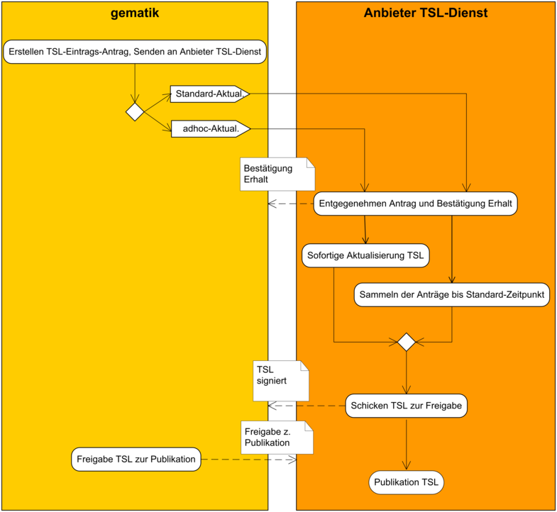
Abbildung 4: Prozess zur Aktualisierung der TSL (schematische Darstellung)
Bezüglich der organisatorischen Prozesse der TSL-Eintragsverwaltung sind die folgenden Anforderungen hinsichtlich Aktualisierung und Änderung zu berücksichtigen.
TIP1-A_4037
Bei der Aktualisierung der TSL-Datei MUSS der Anbieter des TSL-Dienstes zwei verschiedene Prozesse unterstützen:
(a) Standardaktualisierung
(b) adhoc-Aktualisierung auf Aufforderung der gematik
TIP1-A_4038
Die Standardaktualisierung der TSL-Datei MUSS zu konfigurierbaren periodischen Zeitpunkten stattfinden.
<=Das Aktualisierungsintervall wird in [gemSpec_PKI] festgelegt.
TIP1-A_4039
Der Anbieter des TSL-Dienstes MUSS bei einer Standardaktualisierung alle TSL-Eintragsanträge der gematik berücksichtigen, die bis zum festgelegten Stichtag eingegangen und noch nicht umgesetzt sind.
Falls keine TSL-Eintragsanträge eingetroffen sind, MUSS der Anbieter des TSL-Dienstes den Aktualisierungsprozess basierend auf den bestehenden Einträgen fortsetzen.
<=Dadurch stellt der Anbieter des TSL-Dienstes sicher, dass das Ablaufdatum der aktuellsten TSL-Datei in der Zukunft liegt. (Vgl. Erläuterungen zum Element NextUpdate in Kapitel 7.2.3)
Neben der Standardaktualisierung zu festgelegten Zeitpunkten werden auch außerplanmäßige adhoc-Aktualisierungen für dringende Änderungen unterstützt (z. B. Entfernen einer CA aus dem TI-Vertrauensraum nach vorgefallenem Security Incident).
Für alle TSL-Eintragsanträge gelten die folgenden Anforderungen:
TIP1-A_4042
Der Anbieter des TSL-Dienstes SOLL die mit einem TSL-Eintragsantrag erhaltenen Daten auf Vollständigkeit und Plausibilität (Syntax, Schemavalidierung, erlaubte Werte, Zertifikate etc.) prüfen. Alle korrekten Einträge werden danach in die TSL integriert.
<=
TIP1-A_4043
Der Anbieter des TSL-Dienstes MUSS bei Folgeanträgen durch den Vergleich der Betreiberdaten des Ursprungsantrages mit dem Änderungsantrag sicherstellen, dass keine Unstimmigkeiten mit den hinterlegten Informationen vorhanden sind.
<=
Jede zu veröffentlichende TSL wird vom Anbieter des TSL-Dienstes signiert. Die Anforderungen an diese Signatur sind in TIP1-A_4083 im Kapitel 7.1 „Aufbau der TSL“ spezifiziert.
TIP1-A_4044
Der Anbieter des TSL-Dienstes MUSS sicherstellen, dass in der aktuellen Version keine zum Zeitpunkt der TSL-Erstellung abgelaufenen Einträge enthalten sind. Der Anbieter des TSL-Dienstes MUSS abgelaufene Einträge und andere Normabweichungen an gematik melden.
<=
Die gematik gibt final die zu veröffentlichende TSL frei.
TIP1-A_4045
Der Anbieter des TSL-Dienstes MUSS die zu veröffentlichende TSL der gematik zur finalen Freigabe übermitteln.
<=TIP1-A_4046
Der Anbieter des TSL-Dienstes DARF NICHT die TSL ohne Freigabe der gematik veröffentlichen.
<=Der Anbieter des TSL-Dienstes veröffentlicht die TSL-Datei.
Hinweis: Die Schnittstelle I_TSL_Download wird in Kapitel 6.3.1 beschrieben.
TIP1-A_4026
Der Anbieter des TSL-Dienstes MUSS die Produkttyp-spezifischen Service Level für seine Prozesse gemäß Tab_PKI_701 umsetzen. <=
Tabelle 4: Tab_PKI_701 Service Level für Prozesse des Anbieters des TSL-Dienstes
| ID |
Service Level Cluster |
Serviceparamter |
Beschreibung |
Leistungs- übergabe- punkt |
Messmethode |
Wert |
|---|---|---|---|---|---|---|
| TSL_1 |
Service Level Serviceerbringung |
Standard-TSL-Eintragsantrag |
Es handelt sich um die Frist zur Berücksichtigung von TSL-Eintragsanträgen für Änderungen in der TSL vor dem periodischen Aktualisierungszeitpunkt der TSL-Datei. Die TSL-Eintragsanträge, die vor dieser Frist eingegangen sind, müssen berücksichtigt werden. |
Meldungs- eingang Anbieter TSL |
Durch die Schnittstelle I_TSL-Management erzeugter Zeitstempel |
3 WT |
| TSL_2 |
Service Level Serviceerbringung |
adhoc-TSL-Eintragsantrag: Löschen |
Maximale Zeitspanne zwischen: Der Anbieter des TSL-Dienstes nimmt den TSL-Eintragsantrag für das adhoc-Löschen von Einträgen in der TSL-Datei entgegen. Der Anbieter des TSL-Dienstes legt die signierte TSL-Datei der gematik zur finalen Freigabe zur adhoc-Publikation vor. |
1. Meldungs- eingang Anbieter TSL 2. Rück- meldung an gematik |
1. Durch die Schnittstelle I_TSL-Management erzeugter Zeitstempel 2. Zeitstempel Eingang E-Mail oder äquivalent |
4 h |
| TSL_3 |
Service Level Serviceerbringung |
adhoc-TSL-Eintragsantrag: Hinzufügen und Ändern |
Maximale Zeitspanne zwischen: Der Anbieter des TSL-Dienstes nimmt den TSL-Eintragsantrag für Hinzufügungen und Änderungen von Einträgen in der TSL-Datei entgegen. Der Anbieter des TSL-Dienstes legt die signierte TSL-Datei der gematik zur finalen Freigabe vor. |
1 WT |
||
| TSL_4 |
Service Level Serviceerbringung |
Veröffentlichung der TSL-Datei nach adhoc-Löschen |
Maximale Zeitspanne zwischen: Die gematik gibt die neu erstellte TSL-Datei nach erfolgtem adhoc-Löschen frei. Die neu erstellte TSL-Datei kann unter den Adressen der Download-Punkte heruntergeladen werden. |
1. Meldungs- eingang Anbieter TSL 2. I_TSL_Dow nload |
1. Zeitstempel E-Mail oder äquivalent 2. Durch http-Client generierter Zeitstempel |
2h |
| TSL_5 |
Service Level Serviceerbringung |
Normale Veröffentlichung der TSL-Datei |
Maximale Zeitspanne zwischen: Die gematik gibt die neu erstellte TSL-Datei frei, nachdem diese periodisch aktualisiert wurde oder adhoc Einträge hinzugefügt oder geändert wurden. Die neu erstellte TSL-Datei kann unter den Adressen der Download-Punkte heruntergeladen werden. |
1 WT |
Hinweis: Weitere Anforderungen im Hinblick auf produkttyp-übergreifendes Service Level Management werden in [gemRL_Betr_TI] gestellt. Performance-Anforderungen sind in [gemSpec_Perf] geregelt.
P_Trust_Approval stellt die Schnittstelle dar, die alle Prozesse beinhaltet, die ein TSP-X.509 nutzt, um seine Dienste in der TSL-Datei einzutragen. Diese Prozesse sind in den Gesamtablauf der Zulassungs- und Registrierungsprozesse eingebettet, bei welchem der TSP-X.509 immer zwingend mit der gematik kommuniziert. So muss der TSP-X.509 etwa für den Eintrag in die TSL-Datei der Produktivumgebung erst die Zulassung von der Zulassungs- und Registrierungsstelle der gematik erhalten.
Aus diesem Grund übernimmt die gematik im Sinne der Komplexitätsreduktion sämtliche Kommunikation mit den TSP-X.509. Aus Sicht des Anbieters des TSL-Dienstes kanalisiert sie die TSL-Eintragsanträge und reicht sie an ihn weiter. Für den Anbieter des TSL-Dienstes sind deshalb die Prozesse, die er der gematik zur Verfügung stellen muss, relevant. Diese werden im Kapitel 6.1.2 „Schnittstelle P_TSL-Management“ besprochen.
Die Umsetzung der Schnittstelle P_Trust_Approval wird von der gematik übernommen (siehe oben) und wird deshalb gematik-intern geregelt.
TIP1-A_4048
Die gematik MUSS den Eintrag eines TSP-Dienstes in der TSL-Datei veranlassen, wenn dieser sämtliche Voraussetzungen dafür erfüllt.
<=Neben der PKI für die Produktivumgebung (PU) wird eine davon separierte PKI für Test- und Referenzzwecke betrieben. (Siehe dazu [gemSpec_PKI#3.2.2]).
Innerhalb der gemeinsam genutzten PKI für Test- und Referenzzwecke werden pro Vertrauensraum zwei separate TSL-Dateien, je eine für die TU und eine für die RU, herausgegeben.
TIP1-A_4438
Der TSL-Dienst MUSS eine spezifische TSL-Datei erstellen, die den TI-Vertrauensraum in der Testumgebung (TU) abbildet.
<=
A_14492
Der TSL-Dienst MUSS eine spezifische TSL-Datei erstellen, die den TI-Vertrauensraum in der RU abbildet. <=
Die Felder, in denen sich diese TSL-Dateien von denjenigen für die Produktivumgebung unterscheiden, sind in Kapitel beschrieben.
TIP1-A_4439
Der TSL-Dienst MUSS eine getrennte Instanz der Schnittstelle I_TSL-Management in der Testumgebung (TU) implementieren.
<=
A_14493
Der TSL-Dienst MUSS eine getrennte Instanz der Schnittstelle I_TSL-Management in der Referenzumgebung (RU) implementieren. <=
Der Anbieter des TSL-Dienstes muss für den TSL-Dienst sämtliche Prozesse und Schnittstellen implementieren, welche das Management von PKI-spezifischen Anforderungen, also bspw. die Abwicklung von Prozessen bei der Schlüssel- und Zertifikatsverwaltung der TSL-Signer-CA, des TSL-Signers und des OCSP-Responders erlauben.
Das Funktionsmerkmal TSL_PKI-Verwaltung beinhaltet grundsätzlich auch den TI-Vertrauensankerwechsel.
Die Schnittstelle P_TSL-PKI-Zertifikats-Management setzt organisatorisch die Prozesse um, welche für die Generierung von Schlüsselpaaren und Zertifikaten notwendig ist.
TIP1-A_4049
Der Anbieter des TSL-Dienstes MUSS den Prozess der Schlüsselpaargenerierung und Zertifizierung anstoßen. Der Anbieter des TSL-Dienstes MUSS dies zu einer mit der gematik vereinbarten Frist vor dem Ablauf eines bestehenden Zertifikates tun.
<=TIP1-A_4440
Der Anbieter des TSL-Dienstes MUSS ein Konzept für den Prozess der Schlüsselpaargenerierung und Zertifizierung erstellen.
<=TIP1-A_4050
Der Anbieter des TSL-Dienstes MUSS zu einem mit der gematik vereinbarten Zeitpunkt den Prozess des Zertifikatswechsels (Erneuerung TSL-Signer-, TSL-Signer-CA- und OCSP-Signer-Zertifikat) anstoßen.
TIP1-A_4441
Der Anbieter des TSL-Dienstes MUSS ein Konzept für den Prozess des Zertifikatswechsels (Erneuerung TSL-Signer-, TSL-Signer-CA- und OCSP-Signer-Zertifikat) erstellen.
<=TIP1-A_4442
Der Anbieter des TSL-Dienstes MUSS sicherstellen, dass ein neues Schlüsselpaar und das darauf basierende Zertifikat für den TSL-Signer nur im Auftrag der gematik erzeugt werden.
<=TIP1-A_4051
Der Anbieter des TSL-Dienstes MUSS sicherstellen, dass ein neues Schlüsselpaar und der darauf basierende Zertifikats-Request für TSL-Signer-CA und OCSP-Responder nur aufgrund eines geprüften (Authentizität, Autorisierung) Auftrages der gematik erzeugt werden.
<=TIP1-A_4052
Der Anbieter des TSL-Dienstes MUSS überprüfen, dass der Auftrag für eine Schlüsselerzeugung der TSL-Signer-CA, des TSL-Signers und des OCSP-Responders durch zwei verantwortliche Mitarbeiter der gematik unterschrieben ist. Er MUSS dabei die Authentizität und Autorisierung dieser Mitarbeiter auf geeignete verlässliche Weise überprüfen.
<=TIP1-A_4053
Der Anbieter des TSL-Dienstes MUSS prüfen, ob der Auftrag der gematik mindestens die folgenden Daten enthält:
(a) Datum des Auftrags
(b) Name des verantwortlichen Mitarbeiters 1 der gematik
(c) Name des verantwortlichen Mitarbeiters 2 der gematik
(d) Indikator, ob es sich um einen „normalen“ oder einen „notfallmäßigen“ Wechsel bzw. um eine initiale Schlüsselgenerierung handelt
(e) Vorgabe für die Länge und für den Algorithmus des neuen Schlüsselpaares
Die Schnittstelle P_Trust-Anchor-Change dient der organisatorischen Abwicklung des TI-Vertrauensankerwechsels auf Seite des Anbieters des TSL-Dienstes, also des Updates des Schlüsselpaares und Zertifikates der TSL-Signer-CA. Dieser wird folgendermaßen umgesetzt:
Das neue TSL-Signer-CA-Zertifikat wird nach dessen Generierung vom Anbieter des TSL-Dienstes mit dem Aktivierungszeitpunkt markiert und rechtzeitig in die TSL integriert. Dabei wird die Integrität des neuen Schlüssels und des dazugehörigen Zertifikates durch den gültigen alten TI-Vertrauensanker gesichert.
TIP1-A_4054
Der Anbieter des TSL-Dienstes MUSS den TI-Vertrauensankerwechsel (neues TSL-Signer-CA-Zertifikat und spezifischer Eintrag in die TSL) umsetzen können.
<=TIP1-A_4852
Der Anbieter des TSL-Dienstes MUSS über ein Konzept verfügen, wie er die folgenden Prozesse rechtzeitig initiiert und korrekt umsetzt:
(a) Schlüssel- und Zertifikatserneuerung für die TSL-Signer-CA
(b) Eintragung des neuen TSL-Signer-CA unter TSP-Diensten, markiert als neuer TI-Vertrauensanker
Der Anbieter des TSL-Dienstes MUSS in diesem Konzept die Fristen der jeweiligen Prozessschritte festlegen.
Nach dem Initiieren des Prozesses seitens des Anbieters des TSL-Dienstes erfolgt die Schlüssel- und Zertifikatserneuerung gemäß Kapitel 6.2.1 „Schnittstelle P_TSL-PKI-Zertifikats-Management“. (Ein Antrag der gematik wird benötigt.)
Die technischen Anforderungen an einen TSP-Dienst-Eintrag werden in Kapitel 7.3.2 „Angaben zum TSP-Dienst“ gestellt.
Die Abweichungen, um eine solchen Dienst als neuen TI-Vertrauensanker zu markieren, werden in [gemSpec_PKI], insbesondere [gemSpec_PKI#8.1.2.2] beschrieben.
Neben der PKI für die Produktivumgebung (PU) wird eine davon separierte PKI für Test- und Referenzzwecke betrieben. (Siehe dazu [gemSpec_PKI#3.2.2]). Pro PKI-Umgebung müssen also individuelle Schlüsselpaare und Zertifikate erzeugt werden.
TIP1-A_4443
Der Anbieter des TSL-Dienstes MUSS pro PKI-Umgebung separate Schlüsselpaare und Zertifikate für die TSL-Signer-CA, den TSL-Signer und seine OCSP-Responder erzeugen.
<=
Hinweis: Die von der TSL-Signer-CA in der gemeinsamen TU/RU ausgestellten Zertifikate werden zur Signierung der in der TU und RU separaten TSL-Dateien verwendet. Dabei kann für beide TSL-Dateien dasselbe Zertifikat gemeinsam genutzt werden. Es können aber auch unterschiedliche TSL-Signer-Zertifikate zum Signieren der TSL-Dateien in der TU und RU verwendet werden.
TIP1-A_4444
Der Anbieter des TSL-Dienstes MUSS die Namen (CN: und O:) sämtlicher seiner Zertifikate für Testzwecke sowohl in der TU als auch in der RU entsprechend den korrespondierenden Zertifikatsprofilen der Produktivumgebung verwenden und diese um den String „TEST-ONLY“ im CN-Feld sowie „NOT-VALID“ im O-Feld ergänzen.
<=
TIP1-A_4445
Der Anbieter des TSL-Dienstes SOLL die Feldattribute (außer CN: und O:) für sämtliche seiner Zertifikate für Testzwecke sowohl in der TU als auch in der RU gemäß den korrespondierenden Profilen der Produktivumgebung setzen.
<=
TIP1-A_4446
Der Anbieter des TSL-Dienstes DARF NICHT ein HSM oder eine andere Komponente aus der Produktivumgebung für die Test- und Referenzumgebungs-PKI benutzen. Der Anbieter des TSL-Dienstes DARF NICHT ein HSM oder eine andere Komponente aus der Test- und Referenzumgebungs-PKI für die Produktivumgebung benutzen.
<=
Das Funktionsmerkmal TSL_Download stellt das Herunterladen der aktuellen Vertrauenslisten - TSL-Dateien und BNetzA-VL-Datei – und jeweils deren Hashwert-Dateien sicher. Dazu werden bezüglich der TSL-Dateien die TSL(RSA) und TSL(ECC-RSA) jeweils inklusive SHA256-Hashwerten über dieselben Schnittstellen bereitgestellt.
Das Herunterladen der TSL-Dateien geschieht sowohl in der TI als auch über das Internet (für den manuellen Download) über HTTPS . Zusätzlich wird innerhalb der TI das Herunterladen der TSL-Dateien über HTTP angeboten. Beides wird über die Schnittstelle I_TSL_Download realisiert. Über das Internet können auch das TSL-Signer-CA- und das TSL-Signer-Zertifikat, sowie Angaben dazu heruntergeladen werden (Schnittstelle I_Cert_Download).
Das Herunterladen der BNetzA-VL-Datei und deren Hashwert geschieht in der TI über HTTPS (Schnittstelle I_BNetzA_VL_Download). Im Internet werden die Dateien durch den TSL-Dienst nicht zur Verfügung gestellt.
Für das Herunterladen von Dateien vom TSL-Dienst innerhalb der TI gelten die im Folgenden aufgelisteten Anforderungen.
TIP1-A_4055
Der TSL-Dienst MUSS die Schnittstelle I_TSL_Download und I_BNetzA_VL_Download über einen eigenen, selbstbetriebenen Web-Server zur Verfügung stellen.
<=Siehe auch Kapitel 5.4, TIP1-A_3968 bezüglich der Sicherheit des Web-Servers.
TIP1-A_4060
Der TSL-Dienst MUSS die URIs, unter denen Produkttypen der TI Dateien herunterladen können, gemäß den Vorgaben für den Namensraum der gematik gestalten.
<=Die HTTP-URIs für die TI werden in das entsprechende Element der TSL integriert (siehe Kapitel 7.2.6 und 7.5).
TIP1-A_5119
Der TSL-Dienst MUSS die Komprimierung der Daten mittels Komprimierung über HTTP „Content Coding“ [RFC7231] mit dem Algorithmus gzip unterstützen.
<=TIP1-A_5120
Clients (Produkttypen der TI, WANDA Basic und WANDA Smart), die Dateien vom TSL-Dienst herunterladen, SOLLEN die Komprimierung der Daten über HTTP „Content Coding“ [RFC7231] mit dem Algorithmus gzip unterstützen.
<=
Die Schnittstelle I_TSL_Download wird durch [gemKPT_Arch_TIP] vorgegeben:
Nach erfolgreicher Veröffentlichung der TSL muss diese allen Komponenten zur Verfügung stehen.
Die Schnittstelle I_TSL_Download stellt also die TSL den TSL-validierenden Systemen zum Download bereit. Sie enthält damit zwei logische Operationen – eine zum Herunterladen der TSL-Datei und eine zum Herunterladen des Hashwertes der TSL-Datei.
Die Schnittstelle wird sowohl für die TSL(RSA) als auch die TSL(ECC-RSA) parallel, aber unter anderen URIs angeboten.
TIP1-A_4056-01
Der TSL-Dienst MUSS die Schnittstelle I_TSL_Download in der TI gemäß HTTP Version 1.1 [RFC2616] implementieren. Die Schnittstelle MUSS sowohl ohne als auch unter Verwendung des TLS-Protokolls (HTTPS) erreichbar sein.
Dabei MUSS das TLS-Protokoll gemäß [gemSpec_Krypt#GS-A_4385] mit einseitiger Authentifizierung (Server-Authentisierung) implementiert sein und ein Zertifikat gemäß [gemSpec_PKI#GS-A_4615] mit der technischen Rolle "oid_tsl_ti" gemäß [gemSpec_OID#GS-A_4446] verwendet werden. <=
TIP1-A_4057-01
Der TSL-Dienst MUSS die Schnittstelle I_TSL_Download im Internet gemäß HTTP Version 1.1 [RFC2616] über TLS (HTTPS) implementieren. Dabei MUSS das TLS-Protokoll gemäß [gemSpec_Krypt#GS-A_4385] mit einseitiger Authentifizierung (Server-Authentisierung) implementiert sein. <=
TIP1-A_4058
Der TSL-Dienst MUSS für die HTTPS-Verbindung zum Internet ein X.509-Zertifikat verwenden, welches in keinem marktüblichen Webbrowser (z.B. Firefox, Internet Explorer, Chrome und Safari) zu einer Warn- oder Fehlermeldung führt.
<=TIP1-A_4059
Der TSL-Dienst SOLL für die HTTPS-Schnittstelle im Internet ein Extended-Validation-SSL-Zertifikat gemäß [EVSSL] verwenden.
<=Die Schnittstelle I_TSL_Download enthält die logische Operation download_TSL, welche als Output die TSL (entweder in RSA- oder ECC-RSA-Variante) in der in Kapitel 7 beschriebenen Form liefert.
TIP1-A_4062
Der TSL-Dienst MUSS die logische Operation I_TSL_Download::download_TSL so implementieren, dass sie durch den HTTP-GET-Befehl angestoßen werden.
<=A_17680-01
Der TSL-Dienst MUSS die logische Operation I_TSL_Download::download_TSL so implementieren, dass die folgenden URIs realisiert werden:
Für die Produktivumgebung (PU):
TSL(RSA) und deren SHA256-Hashwert in der TI:
Hinweis: Die folgenden Anforderungen aus Kap. 6.3.1.2 gelten entsprechend auch für die Bereitstellung der TSL(ECC-RSA)
TIP1-A_4063
Der TSL-Dienst MUSS die logische Operation I_TSL_Download::download_TSL so implementieren, dass die Server-Antwort die notwendigen HTTP-Header-Datenfelder gemäß [RFC2616] enthält.
<=TIP1-A_4064
Der TSL-Dienst SOLL die logische Operation I_TSL_Download::download_TSL so implementieren, dass das Datenfeld „Content-Type“ im HTTP-Header der Server-Antwort als Wert den MIME-Type „application/vnd.etsi.tsl+xml“ enthält.
<=Hinweis: Dieser MIME-Type entspricht der IANA-Registrierung (siehe http://www.iana.org/assignments/media-types/application/vnd.etsi.tsl+xml und [ETSI_TS_119_612], Kap. 6.2.1 u. 6.2.2) für TSL-Dateien im XML-Format.
TIP1-A_4065
Der TSL-Dienst MUSS die logische Operation I_TSL_Download::download_TSL so implementieren, dass die Server-Antwort im HTTP-Body die TSL als XML-Datei enthält.
<=Hinweis: Auf das genaue Format der TSL-XML-Datei wird in Kapitel 7 eingegangen.
Zusätzlich enthält die Schnittstelle I_TSL_Download die logische Operation get_Hash, welche als Output die TSL-Hashwert-Datei (entweder in RSA- oder ECC-RSA-Variante) liefert.
A_17681
Der TSL-Dienst MUSS die logische Operation I_ TSL_Download::get_Hash so implementieren, dass der SHA-256-Hashwert der TSL-Datei heruntergeladen werden kann. Der TSL-Dienst MUSS die SHA-256 Hashwert-Datei analog zu [ETSI_TS_119_612], Kap. 6.1 erstellen und dabei SHA-256 als Hashwert-Verfahren verwenden. Die Hashwert-Datei MUSS dabei ausschließlich den Hashwert enthalten.
<=
A_17682
Der TSL-Dienst MUSS zu jedem Download-URI der TSL-Datei in der TI und im Internet einen entsprechenden URI zum Download des SHA-256-Hashwertes anbieten.
Der TSL-Dienst MUSS diese URIs gemäß [ETSI_TS_119_612], Kap. 6.1 und unter Beachtung der Groß- und Kleinschreibung gestalten. D.h., ein Download-URI des Hashwertes wird dadurch gebildet, dass die String-Endung ‘.xml‘ oder ‘.xtsl‘ eines Download-URI der TSL-Datei durch ‘.sha2‘ ersetzt wird.
Dabei MUSS die URI dieser Operation ausschließlich unter Verwendung des TLS-Protokolls (HTTPS) angeboten werden (vgl. TIP1-A_4056).
<=
Die TSL-Dateien und deren Hash-Werte müssen vom Anbieter des TSL-Dienstes in der TI und im Internet zum Download bereitgestellt werden.
Neben der Bereitstellung der TSL in der TI und im Internet zum manuellen Download wird die Möglichkeit geschaffen, im Internet die TSL nebst relevanter Prüf-Dateien zum automatisierbaren Download bereitzustellen. Damit haben Konnektoren die Möglichkeit, im Falle der Nichterreichbarkeit der TI durch eine fehlende oder ungültige TSL, eine gültige TSL aus dem Internet als Fallback-Mechanismus automatisiert einlesen und verifizieren zu können.
A_21175
Der TSL-Dienst MUSS zusätzliche Internet-Downloadpunkte für den automatisierbaren Download als Fallback-Verfahren für Konnektoren bereitstellen. Dazu MUSS der TSL-Dienst die Schnittstelle I_TSL_Download im Internet gemäß HTTP-Version 1.1 [RFC2616] implementieren. <=
A_21176
Der TSL-Dienst MUSS für die zusätzliche in A_21175 definierte Schnittstelle den gleichen Server (Host) verwenden, an dem auch die CRL zum Download bereitgestellt wird (siehe [gemSpec_X.509_TSP#TIP1-A_4248]). <=
A_21177
Der TSL-Dienst MUSS auf den in A_21175 definierten zusätzlichen Internet-Downloadpunkten für den automatisierbaren TSL-Download je Umgebung jeweils drei verschiedene Dateien bereitstellen:
A_21178
Der TSL-Dienst MUSS die TSL-Datei jeweils unmittelbar nach Bereitstellung in der TI, spätestens nach einer Stunde, auch auf dem zusätzlichen Internet-Downloadpunkte für den automatisierbaren Download (siehe A_21175) bereitstellen. <=
A_21179
Der TSL-Dienst MUSS mit dem TSL-Signer, der auch die XML-Datei der TSL signiert hat, eine Detached-Signatur der gesamten TSL-Datei (*.xml) erzeugen und als Signatur-Datei mit der Endung „.sig“ bereitstellen. Dabei MUSS der TSL-Dienst je Signaturtyp der TSL (RSA oder ECC) den jeweiligen aktuellen TSL-Signer (RSA oder ECC) verwenden. Die erzeugte Signatur muss als ASN1-Struktur mit den folgenden 3 Elementen bestehen:
Hinweis: Eine erweiterte Übersicht zum Aufbau der Detached-Signatur-Datei inkl. Beispiel finden sie unter https://github.com/gematik/examples-TelematikInterfaces/tree/master/tslService/detachedSignature.
A_21181
Der TSL-Dienst MUSS für den aktuell verwendeten TSL-Signer eine OCSP-Antwort erzeugen, stündlich erneuern und als Antwort-Datei mit der Endung „.ocsp“ bereitstellen. Dabei MUSS der TSL-Dienst zum Signieren der OCSP-Antwort je Signaturtyp der TSL (RSA oder ECC) wie bei regulären OCSP-Antworten den jeweiligen aktuellen OCSP-Signer (RSA oder ECC) verwenden. <=
A_21182
Der TSL-Dienst MUSS für die zusätzliche, in A_21175 definierte Schnittstelle die folgenden URIs realisieren (aufgeteilt je nach Umgebung):
Für die Produktivumgebung (PU):
TSL (RSA):
Die Schnittstelle I_BNetzA_VL_Download wird durch [gemKPT_Arch_TIP] vorgegeben:
Die Vertrauensliste der BNetzA muss in der TI zur Verfügung stehen.
Die Schnittstelle I_BNetzA_VL_Download enthält zwei logische Operationen – eine zum Herunterladen der BNetzA-VL-Datei und eine zum Herunterladen eines Hashwertes der BNetzA-VL-Datei.
TIP1-A_6768-01
Der TSL-Dienst MUSS die Schnittstelle I_BNetzA_VL_Download in der TI gemäß HTTP Version 1.1 [RFC2616] über TLS (HTTPS) implementieren. Dabei MUSS das TLS-Protokoll gemäß [gemSpec_Krypt#GS-A_4385] mit einseitiger Authentifizierung (Server-Authentisierung) implementiert sein und ein Zertifikat gemäß [gemSpec_PKI#GS-A_4615] mit der technischen Rolle "oid_tsl_ti" gemäß [gemSpec_OID#GS-A_4446] verwendet werden. Die Schnittstelle MUSS ausschließlich unter Verwendung des TLS-Protokolls (HTTPS) erreichbar sein.
<=
TIP1-A_6750
Der TSL-Dienst MUSS die logischen Operationen der Schnittstelle I_BNetzA_VL_Download so implementieren, dass sie durch den HTTP-GET-Befehl angestoßen werden.
<=TIP1-A_6751
Der TSL-Dienst MUSS die logischen Operationen der Schnittstelle I_BNetzA_VL_Download so implementieren, dass die Server-Antwort die notwendigen HTTP-Header-Datenfelder gemäß [RFC2616] enthält.
<=TIP1-A_6752
Der TSL-Dienst SOLL die logische Operation I_BNetzA_VL_Download::download_VL so implementieren, dass das Datenfeld „Content-Type“ im HTTP-Header der Server-Antwort als Wert den MIME-Type „application/vnd.etsi.tsl+xml“ enthält.
<=Hinweis: Dieser MIME-Type entspricht der IANA-Registrierung (siehe http://www.iana.org/assignments/media-types/application/vnd.etsi.tsl+xml und [ETSI_TS_119_612], Kap. 6.2.1 u. 6.2.2) für TSL-Dateien im XML-Format.
TIP1-A_6753
Der TSL-Dienst MUSS die logische Operation I_BNetzA_VL_Download::download_VL so implementieren, dass die Server-Antwort im HTTP-Body die BNetzA-VL als XML-Datei enthält.
<=TIP1-A_6754
Der TSL-Dienst MUSS die logische Operation I_BNetzA_VL_Download::get_Hash so implementieren, dass der von der BNetzA publizierte SHA-256-Hashwert der BNetzA-VL-Datei heruntergeladen werden kann.
<=TIP1-A_6755
Der TSL-Dienst MUSS zu jedem Download-URI der BNetzA-VL in der TI einen entsprechenden URI zum Download des SHA-256-Hashwertes der BNetzA-VL anbieten.
Der TSL-Dienst MUSS diese URIs gemäß [ETSI_TS_119_612], Kap. 6.1 und unter Beachtung der Groß- und Kleinschreibung gestalten. D.h. ein Download-URI des Hashwertes wird dadurch gebildet, dass die String-Endung ‘.xml‘ oder ‘.xtsl‘ eines Download-URI der BNetzA-VL durch ‘.sha2‘ ersetzt wird.
TIP1-A_6756
Der Anbieter des TSL-Dienstes MUSS die EU List of Trusted Lists (EU-LOTL, s. [EU_LOTL]) vor jeder Standardaktualisierung der TSL auf Veränderungen hinsichtlich BNetzA-VL-Signer-Zertifikate überprüfen.
Der Anbieter des TSL-Dienstes MUSS BNetzA-VL-Signer-Zertifikate aus der TSL entfernen, wenn diese nicht mehr in der EU-LOTL enthalten sind.
Der Anbieter des TSL-Dienstes MUSS BNetzA-VL-Signer-Zertifikate in die TSL aufnehmen, wenn diese neu in der EU-LOTL enthalten sind.
Der Anbieter des TSL-Dienstes MUSS eine von ihm verwendete EU-LOTL gem. [ETSI_TS_119_612#Annex A] beziehen und überprüfen.
Hinweis: Da die TSL spätestens nach 23 Tagen (gem. GS-A_5214 bereits vor Ablauf der Gültigkeitsdauer) neu erstellt wird (vgl. [gemSpec_PKI], Kap. 8.2.4 „TSL-Zeitparameter“), ist dieser Zeitraum ausreichend, um planmäßige Änderungen der BNetzA-VL-Signer zu übernehmen.
Etwaige außerplanmäßige, kurzfristige Änderungen des BNetzA-VL-Signers würden mittels einer adhoc-Aktualisierung der TSL publiziert.
TIP1-A_6757
Der TSL-Dienst MUSS mindestens einmal pro Stunde unter Zuhilfenahme eines offiziellen Downloadpunktes der Bundesnetzagentur überprüfen, ob die im TSL-Dienst vorhandene BNetzA-VL die aktuell gültige ist.
Bei Feststellung eines Unterschiedes MUSS die neue BNetzA-VL auf den TSL-Dienst heruntergeladen werden. Zusätzlich wird der aktuelle Hashwert der BNetzA-VL auf den TSL-Dienst heruntergeladen.
TIP1-A_6769
Der TSL-Dienst MUSS sicherstellen, dass die von der BNetzA bereitgestellte BNetzA-VL und der entsprechende Hashwert nur TLS-gesichert über einen HTTPS-Downloadpunkt heruntergeladen werden. Ein Herunterladen über einen HTTP-Downloadpunkt wird nicht gestattet.
Der TSL-Dienst MUSS die Vertrauenswürdigkeit des dabei verwendeten TLS-Server-Zertifikats der BNetzA sicherstellen.
Hinweis: Die Downloadpunkte der BNetzA-VL und des zugehörigen Hashwertes sind unter https://tl.bundesnetzagentur.de/TL-DE.xml zu finden.
TIP1-A_6758
Der TSL-Dienst MUSS die heruntergeladene BNetzA-VL auf zeitliche Gültigkeit prüfen.
Der TSL-Dienst MUSS eine Prüfung der heruntergeladenen BNetzA-VL auf Vollständigkeit (Schemaprüfung) durchführen.
Der TSL-Dienst MUSS eine Signaturprüfung der heruntergeladenen BNetzA-VL durchführen gegen ein in der TSL vorhandenes BNetzA-VL-Signer-Zertifikat.
Der TSL-Dienst MUSS die BNetzA-VL nach erfolgreich durchgeführten Prüfungen auf den dafür vorgesehenen Download-Punkten bereitstellen.
Neben der Bereitstellung der BNetzA-VL MUSS auch der von der BNetzA heruntergeladene Hashwert auf dem TSL-Dienst bereitgestellt werden. <=
Die Schnittstelle I_Cert_Download stellt das TSL-Signer-CA-Zertifikat den Herstellern von Produkttypen, die Zertifikate prüfen, unter einer statischen URL zum sicheren Download zur Verfügung (vgl. [gemSpec_PKI#GS-A_4640]). Auch wird das TSL-Signer-Zertifikat selbst als einzelne Datei bereitgestellt.
TIP1-A_4066
Der TSL-Dienst MUSS die Schnittstelle I_Cert_Download via eigenen, selbstbetriebenen Web-Server zur Verfügung stellen.
<=Siehe auch Kapitel 5.4, TIP1-A_3968 bezüglich der Sicherheit des Web-Servers.
TIP1-A_4067-01
Der TSL-Dienst MUSS die Schnittstelle I_Cert_Download im Internet gemäß HTTP Version 1.1 [RFC2616] über TLS (HTTPS) implementieren. Dabei MUSS das TLS-Protokoll gemäß [gemSpec_Krypt#GS-A_4385] mit einseitiger Authentifizierung (Server-Authentisierung) implementiert sein. <=
TIP1-A_4068
Der TSL-Dienst MUSS für die HTTPS-Verbindung ein X.509-Zertifikat verwenden, welches in keinem marktüblichen Webbrowser (z.B. Firefox, Internet Explorer, Chrome und Safari) zu einer Warn- oder Fehlermeldung führt.
<=TIP1-A_4069
Der TSL-Dienst SOLL für die HTTPS-Verbindung ein Extended-Validation-SSL-Zertifikat gemäß [EVSSL] verwenden.
TIP1-A_4070
Der TSL-Dienst MUSS sicherstellen, dass die Schnittstelle I_Cert_Download über statische, vollständige URIs erreichbar ist.
<=Die Schnittstelle I_Cert_Download enthält genau eine logische Operation download_Cert, welche als Output das jeweilige Zertifikat liefert.
TIP1-A_4071
Der TSL-Dienst MUSS für die Schnittstelle I_Cert_Download die logische Operation download_Cert implementieren.
<=TIP1-A_4072
Der TSL-Dienst MUSS die logische Operation I_Cert_Download::download_Cert so implementieren, dass sie durch den HTTP-GET-Befehl angestoßen wird.
<=
TIP1-A_4073
Der TSL-Dienst MUSS die logische Operation I_Cert_Download::download_Cert so implementieren, dass die Server-Antwort im HTTP-Body das entsprechende DER-codierte Zertifikat enthält.
<=
TIP1-A_4074
Der TSL-Dienst MUSS für das TSL-Signer-CA-Zertifikat und das TSL-Signer-Zertifikat sowie auch für das Komponenten-CA-Zertifikate die folgenden Angaben im Web veröffentlichen:
(a) Das X.509-Zertifikat an sich
(b) Den Fingerprint des Zertifikates gemäß [gemSpec_Krypt#GS-A_4393]
(c) Das Datum, des Beginns der Gültigkeit des zugehörigen Schlüsselpaares für den Einsatz als TSL-Signer-CA (TI-Vertrauensanker), als TSL-Signer oder als Komponenten-CA.
TIP1-A_4075
Der Anbieter des TSL-Dienstes MUSS auf Anfrage von Herstellern von Produkttypen und anderen berechtigten Teilnehmern in der TI den Fingerprint des TSL-Signer-CA-Zertifikats schriftlich per Post verschicken.
<=Neben der PKI für die Produktivumgebung (PU) wird eine davon separierte PKI für Test- und Referenzzwecke betrieben. (Siehe dazu [gemSpec_PKI#3.2.2]). Die Schnittstellen I_TSL_Download, I_BNetzA_VL_Download und I_Cert_Download müssen deshalb für alle PKI-Umgebungen zur Verfügung gestellt werden.
Innerhalb der gemeinsam genutzten PKI für Test- und Referenzzwecke müssen zudem dedizierte Schnittstellen I_TSL_Download und I_Cert_Download für die TU und für die RU bereitgestellt werden.
TIP1-A_4447
Der TSL-Dienst MUSS die TSL-Datei für die Testumgebung TU, sowie seine Zertifikate für Testzwecke und die dazugehörigen Angaben zum Download bereitstellen und publizieren. Der TSL-Dienst MUSS diese Daten als Testdaten kennzeichnen.
<=
A_14497
Der TSL-Dienst MUSS die TSL-Datei für die RU, sowie seine Zertifikate für Testzwecke und die dazugehörigen Angaben zum Download bereitstellen und publizieren. Der TSL-Dienst MUSS diese Daten als Testdaten kennzeichnen. <=
TIP1-A_4448
Der TSL-Dienst SOLL eine eigene Dienstinstanz für die Downloadschnittstellen der TI für die Testumgebung (TU) in der TI betreiben.
<=
A_14498
Der TSL-Dienst SOLL eine eigene Dienstinstanz für die Schnittstelle I_TSL_Download für den Download der TSL für die Referenzumgebung (RU) in der TI betreiben. <=
TIP1-A_6759
Der TSL-Dienst MUSS eine Pseudo-BNetzA-VL von der gematik jeweils für die Testumgebung TU und Referenzumgebung RU analog zur produktiven BNetzA-VL beziehen und prüfen.
<=
TIP1-A_6760
Der Anbieter des TSL-Dienstes MUSS eine Pseudo-BNetzA-VL für die Testumgebung TU und Referenzumgebung RU analog zur bestehenden produktiven BNetzA-VL zum Download bereitstellen. Die in der Pseudo-BNetzA-VL verwendeten Pseudo-BNetzA-VL-Signer-Zertifikate müssen jeweils in die TU- und RU-TSL aufgenommen und bei Ablauf der zeitlichen Gültigkeit oder bei Auftrag durch die gematik entfernt werden.
<=
Das TSL-Signer-Zertifikat muss von den Komponenten der Telematikinfrastruktur Status-geprüft werden können. Dafür wird ein dedizierter OCSP-Responder betrieben.
TIP1-A_4076-01
Der TSL-Dienst MUSS sicherstellen, dass der Validierungsdienst in Form eines OCSP-Responders über das Netzwerk der Telematikinfrastruktur wie auch im Internet erreichbar ist.
<=
Die technischen Parameter und Anforderungen der Schnittstelle I_OCSP_Status_Information des Funktionsmerkmals „TSL_OCSP_Responder“ sind in [gemSpec_PKI#9.1] vollständig beschrieben. Es gelten die Anforderungen, welche dort an den TSL-Dienst gestellt werden.
Die organisatorische Schnittstelle P_Cert_Revocation stellt sicher, dass das TSL-Signer-Zertifikat gesperrt werden kann.
TIP1-A_4077
Der Anbieter des TSL-Dienstes MUSS eine klare organisatorische Trennung zwischen dem Betrieb und den Verantwortlichkeiten der Prozesse zum Sperren und des OCSP-Responders einerseits und sonstigen Betrieb und Rollen in der TI andererseits umsetzen und dokumentieren.
<=TIP1-A_4078
Der Anbieter des TSL-Dienstes DARF NICHT Sperranträge von anderen Stellen als von vorgängig bezeichneten Mitarbeitern der gematik entgegennehmen und bearbeiten.
<=TIP1-A_4079
Der Anbieter des TSL-Dienstes MUSS ein Verfahren für die unverzügliche Sperrung des TSL-Signer-Zertifikats bereitstellen und dokumentieren. Der Anbieter des TSL-Dienstes MUSS in der Dokumentation aufzeigen, dass dieses Verfahren auf höchstem Niveau sicher und stabil ist.
<=Neben der PKI für die Produktivumgebung (PU) wird eine davon separierte PKI für Test- und Referenzzwecke betrieben. (Siehe dazu [gemSpec_PKI#3.2.2]). Der Validierungsdienst in Form eines OCSP-Responders muss für jede PKI-Umgebung bereitgestellt werden.
TIP1-A_4449
Der TSL-Dienst MUSS einen individuellen OCSP-Responder zur Validierung des TSL-Signer-Zertifikats zu Testzwecken betreiben.
<=Die folgenden Angaben beschreiben den technischen Aufbau der TSL und sind vom TSL-Dienst zwingend zu berücksichtigen, um die TSL TI-konform mit diesen Vorgaben bereitzustellen.
Andere TI-Produkttypen sollen die TSL nur entsprechend ihrer definierten Use-Cases verarbeiten. Es sollen von ihnen nicht alle TSL-Elemente geprüft werden.
A_17683
Der TSL-Dienst MUSS bezüglich Erzeugung, Befüllung und Signierung der TSL(RSA) nur RSA-Elemente bzw. RSA-signierte Zertifikate verwenden. Ausnahmen davon können die in den Kapiteln 7.5, 7.6 und 7.7 dieses Dokumentes beschriebenen TSL-Elemente für BNetzA-VL, DNSSEC und CVC sein.
<=A_17684
Der TSL-Dienst MUSS bezüglich Erzeugung, Befüllung und Signierung der TSL(ECC-RSA) sowohl ECC- als auch RSA-Elemente bzw. entsprechend signierte Zertifikate (ECDSA bzw. RSA) verwenden.
<=
Die folgenden Ausführungen und Anforderungen beziehen sich sowohl auf die TSL(RSA) als auch die TSL(ECC-RSA).
Der strukturelle Aufbau sowie die einzelnen TSL-Elemente und ihre Inhalte sind in [ETSI_TS_102_231_V3.1.2] beschrieben.
TIP1-A_4081
Der TSL-Dienst MUSS die TSL gemäß den Vorgaben nach [ETSI_TS_102_231_V3.1.2] erzeugen und befüllen.
<=TIP1-A_4082
Der TSL-Dienst MUSS die TSL als XML-Datei gemäß [ETSI_TS_102_231_V3.1.2#B] und somit auch konform zu dem durch [ETSI_TS_102_231_V3.1.2#B] definierten XML-Schema [ts_102231v030102_xsd.xsd] erzeugen.
<=Für die TI, insbesondere für das Funktionieren der PKI-spezifischen Technischen Use Cases (TUCs), müssen die allgemeinen Vorgaben aus [ts_102231v030102_xsd.xsd] (das Schema gemäß ETSI) weiter eingeschränkt werden.
TIP1-A_5121
Der TSL-Dienst MUSS die TSL als XML-Datei gemäß Tab_PKI_710 bis Tab_PKI_716 erstellen.
<=In den nachfolgenden Abschnitten werden Vorgaben zur Verwendung und zum Inhalt relevanter Felder gemacht, die vom TSL-Dienst einzuhalten sind.
Die Abbildung 5 zeigt die Grundstruktur der TSL. Die Schemainformationen geben Auskunft u. a. über den Herausgeber der TSL. Die "TrustServiceProviderList“ beinhaltet die Angaben der registrierten TSPs.
TIP1-A_4083
Der TSL-Dienst MUSS die Integrität der Inhalte der TSL durch eine Signatur der XML-Datei gemäß [ETSI_TS_102_231_V3.1.2#B.6] gewährleisten.
Der TSL-Dienst MUSS die Signatur der TSL entsprechend der Vorgaben aus [gemSpec_Krypt#GS-A_4371] wählen.
Das Signaturfeld ist also obligatorisch.
Tabelle 5: Tab_PKI_710 TSL-Datei – Element TrustServiceStatusList
| Bezeichnung |
TrustServiceStatusList |
|---|---|
| Beschreibung |
Siehe [ETSI_TS_102_231_V3.1.2#B.1.3] |
| Optional |
Nein |
| Wertebereich |
Das Attribut „Id“ muss zwingend vorhanden sein. Das Element „TrustServiceProviderList" muss zwingend vorhanden sein. Das Element „ds:Signature“ muss zwingend vorhanden sein. |
TIP1-A_4084
Der TSL-Dienst MUSS sämtliche in der TSL referenzierten X.509-Zertifikate (z.B. CA-, OCSP-, CRL- oder TSL-Signer) direkt als Element X509Certificate in der TSL eintragen.
<=
Tabelle 6: Tab_PKI_711 TSL-Datei – Element DigitalId
| Bezeichnung |
DigitalId |
|---|---|
| Beschreibung |
Siehe [ETSI_TS_102_231_V3.1.2#B.4.3] |
| Optional |
Nein |
| Wertebereich |
X509Certificate oder Other gemäß [ETSI_TS_102_231_V3.1.2#B.4.3] |
Tabelle 7: Tab_PKI_712 TSL-Datei – Element KeyInfo
| Bezeichnung |
ds:KeyInfo |
|---|---|
| Beschreibung |
Siehe [ETSI_TS_102_231_V3.1.2#B.6.1] |
| Optional |
Nein |
| Wertebereich |
X509Certificate gemäß [ETSI_TS_102_231_V3.1.2#B.6.1] |
TIP1-A_4085
Der TSL-Dienst SOLL neben den gemäß [ETSI_TS_102_231_V3.1.2#B] zwingend erforderlichen Elementen nur Elemente in die TSL einfügen, die durch Anforderungen explizit verlangt werden.
<=Eine Hilfe für das Verständnis der grafischen Darstellungen der Elemente ist in „Anhang B – Leseanleitung für XML-Schema-Fragmente beschrieben.
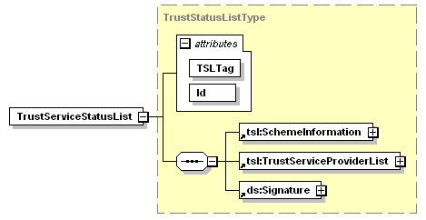
Abbildung 5: Grundstruktur der TSL-Elemente
TIP1-A_4086
Der TSL-Dienst MUSS das Attribut "Id" im Header der TSL-Datei befüllen und dabei das Erstellungsdatum in den Wert des Attributes einfließen lassen. (Id="IDversionSequenzErstellungsdatumUhrzeit"). Das Attribut "Id" besteht aus mehreren Datentypen in denen das ErstellungsdatumUhrzeit im Attribut "Id" folgendes, von [gemSpec_TSL#TIP1-A_4087] abweichendes Format aufweisen muss: "YYYYMMDDhhmmssZ".
<=Übergreifend für die folgenden Ausführungen gilt:
TIP1-A_4087
Der TSL-Dienst MUSS Datumsformate nach [ETSI_TS_102_231_V3.1.2] als xsd:dateTime gestalten. Das Format MUSS wie folgt aufgebaut sein: <YYYY-MM-DDThh:mm:ssZ> - Beispiel: 2012-04-12T23:59:59Z
<=Abbildung 6 stellt die Grundstruktur der TSL als Schemadiagramm dar. Das Element SchemeInformation gibt u. a. Auskunft über den Herausgeber der TSL.
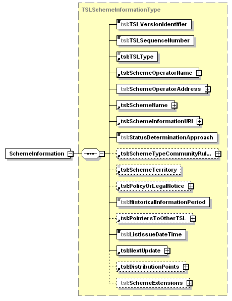
Abbildung 6: Element „SchemeInformation“
In den folgenden Abschnitten werden die normativen Werte für die Felder im Element SchemeInformation festgelegt.
TIP1-A_4088
Der TSL-Dienst MUSS das Element „TSLType“ wie folgt befüllen:
<TSLType>http://uri.etsi.org/TrstSvc/TSLtype/generic</TSLType>
TIP1-A_4089
Der TSL-Dienst MUSS das Element SchemeOperatorName wie folgt befüllen:
<SchemeOperatorName>
<Name xml:lang="DE">gematik GmbH</Name>
</SchemeOperatorName>
<=
TIP1-A_4090
Der TSL-Dienst MUSS das Element „SchemeName“ wie folgt befüllen:
<SchemeName>
<Name xml:lang="DE">gematik TSL Scheme</Name>
</SchemeName>
TIP1-A_4091
Der TSL-Dienst MUSS das Element „SchemeInformationURI“ wie folgt befüllen:
<SchemeInformationURI>
<URI xml:lang="DE">http://www.gematik.de</URI>
</SchemeInformationURI>
TIP1-A_4092
Der TSL-Dienst MUSS das Element „StatusDeterminationApproach“ wie folgt befüllen:
<StatusDeterminationApproach>
http://uri.etsi.org/TrstSvc/TSLType/StatusDetn/passive
</StatusDeterminationApproach>
<=
Die Version der TSL-Spezifikation wird entsprechend [ETSI_TS_102_231_V3.1.2] auf den Wert 3 gesetzt.
<TSLVersionIdentifier>3</TSLVersionIdentifier>
Die Nummerierung der TSL erfolgt über das Element TSLSequenceNumber. Bei jeder Erstellung wird der Inhalt um 1 inkrementiert. Der Anfangswert beträgt "1".
<TSLSequenceNumber> {Wert := "Bei jeder Erstellung wird diese Nummer inkrementiert"} </TSLSequenceNumber>
A_17685
Der TSL-Dienst MUSS das TSL Element TSLSequenceNumber so einsetzen, dass für die TSL(RSA) die Nummern von 0 bis 9999 genutzt werden und für die TSL(ECC-RSA) die Nummern ab 10000.
<=
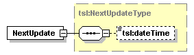
Abbildung 7: Element „NextUpdate“
Das Element NextUpdate ist gemäß [ETSI_TS_102_231_V3.1.2] in der TSL enthalten:
<NextUpdate>
<dateTime> <Datum := "Erstellungsdatum + konfigurierbarer Wert (z.B. 30 Tage)"> </dateTime>
</NextUpdate>
Hinweis: Die Befüllung des Elementes NextUpdate wird in [gemSpec_PKI#8.2.4] durch die Anforderung GS-A_4897 "Gültigkeitsdauer einer TSL" geregelt.
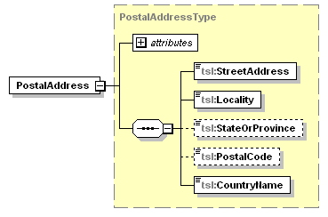
Abbildung 8: Element „PostalAddress“
TIP1-A_4093
Der TSL-Dienst MUSS das Element „PostalAddress“, welches die postalische Adresse des „SchemeOperator“ enthält, wie folgt befüllen:
<PostalAddress xml:lang="DE">
<StreetAddress>Friedrichstrasse 136</StreetAddress>
<Locality>Berlin</Locality>
<StateOrProvince>Berlin</StateOrProvince>
<PostalCode>10117</PostalCode>
<CountryName>DE</CountryName>
</PostalAddress>
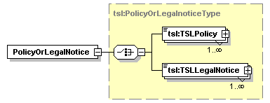
Abbildung 9: Element für „Policy-Angaben“
TIP1-A_4094
Der TSL-Dienst MUSS das Element „PolicyOrLegalNotice“ wie folgt befüllen: <PolicyOrLegalNotice>
<TSLLegalNotice xml:lang="DE">Certificate Policy der gematik, OID {oid_policy_gem_or_cp}</TSLLegalNotice>
</PolicyOrLegalNotice>
Der Anbieter des TSL-Dienstes MUSS den OID (oid_policy_gem_or_cp) der Policy [gemRL_TSL_SP_CP] dem Dokument [gemSpec_OID#Tab_PKI_404] entnehmen.
TIP1-A_4095
Der TSL-Dienst SOLL das Element HistoricalInformationPeriod mit dem Wert „0“ als Inhalt befüllen.
<=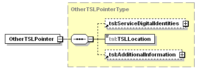
Abbildung 10: Element für „Lokalisierungspunkte der TSL“
TIP1-A_4096
Der TSL-Dienst MUSS im Element "PointersToOtherTSL“ die Zugriffsadressen für die TSL-Datei integrieren. Er MUSS dieses Element wie folgt befüllen:
<PointersToOtherTSL>
<OtherTSLPointer>
<TSLLocation>{URL für TSL-Datei Primary Location}</TSLLocation>
<AdditionalInformation>
<TextualInformation xml:lang="DE">{oid_tsl_p_loc}</TextualInformation>
</AdditionalInformation>
</OtherTSLPointer>
<OtherTSLPointer>
<TSLLocation>{URL für TSL-Datei Backup Location}</TSLLocation>
<AdditionalInformation>
<TextualInformation xml:lang="DE">{oid_tsl_b_loc}</TextualInformation>
</AdditionalInformation>
</OtherTSLPointer>
</PointersToOtherTSL>
Der TSL-Dienst MUSS sowohl eine primäre als auch eine Backup-Download-Adresse vorsehen.
Der TSL-Dienst MUSS den OID der TSLLocation (oid_tsl_p_loc, oid_tsl_b_loc) dem Dokument [gemSpec_OID#Tab_PKI_407] entnehmen.
Zu einem TSP werden Informationen bezüglich seines Betriebs und seiner Dienste in den Elementen TSPInformation und TSPServices der TSL erfasst.
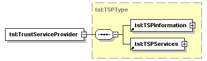
Abbildung 11: Angaben zum TSP
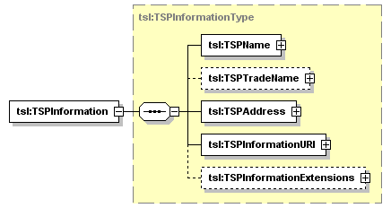
Abbildung 12: Betreiber Informationen
Mittels des Elements TSPName wird der Name der verantwortlichen juristischen Person des TSPs, deren TSP-Dienste über das Schema anerkannt werden, abgebildet ([ETSI_TS_102_231_V3.1.2#B.3.1]). Dabei muss es sich gemäß [ETSI_TS_102_231_V3.1.2#5.4.1] um den Namen handeln, unter dem alle formalen rechtlichen Registrierungen erfolgen und an den jegliche formale Kommunikation, unabhängig ob physisch oder elektronisch, gerichtet wird.
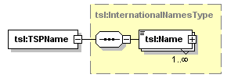
Abbildung 13: Angaben zur juristischen Person des TSP
Der alternative (Marken-)Name, unter dem die für die TSP verantwortliche juristische Person am Markt auftritt, wird durch das Element TSPTradeName abgebildet.
TIP1-A_4097
Der TSL-Dienst MUSS das Element TSPTradeName für jeden TSP-Eintrag einsetzen und befüllen.
<=TIP1-A_4098
Der Wert im Element TSPTradeName KANN identisch mit dem Wert des Elementes TSPName sein.
<=
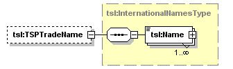
Abbildung 14: Angaben zum alternativen (Marken-)Namen des TSP
Der/die URI(s), unter der die Teilnehmer TSP-spezifische Informationen zu allgemeinen Geschäftsbedingungen, Haftung und ähnlichem erhalten können, werden in das Element TSPInformationURI abgelegt.
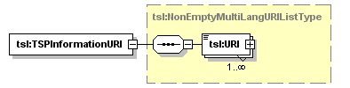
Abbildung 15: Angaben zur URI des TSPs
Die postalische sowie die elektronische Adresse des TSPs werden durch das Element TSPAddress dargestellt.
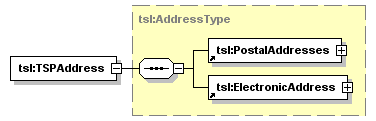
Abbildung 16: Angaben zur postalischen und elektronischen Adresse
Pro Dienst des TSPs enthält das Element TSPServices ein Unterelement TSPService.
Das Element ServiceHistory wird in der Telematikinfrastruktur nicht verwendet und wird deshalb nicht befüllt.
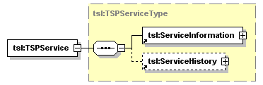
Abbildung 17: Angaben zu den TSP-Diensten
Pro Dienst wird das Element ServiceInformation verwendet. Die Abbildung 18 stellt die Struktur des Elementes dar.
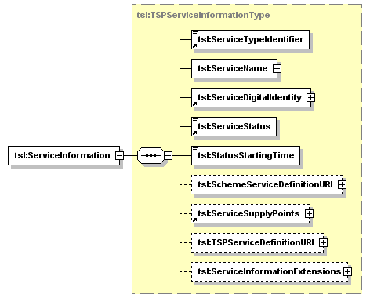
Abbildung 18: Struktur der TSP-Service-Informationen
Das Element ServiceTypeIdentifier spezifiziert den Anwendungszweck des TSP-Dienstes.
TIP1-A_4099
Der TSL-Dienst MUSS pro TSP-Dienst einen der folgenden URIs als Wert in das Element ServiceTypeIdentifier einfügen:
(a) http://uri.etsi.org/TrstSvc/Svctype/CA/PKC (TSP, der X.509-Zertifikate ausstellt)
(b) http://uri.etsi.org/TrstSvc/Svctype/CA/QC (TSP, der qualifizierte Zertifikate ausstellt)
(c) http://uri.etsi.org/TrstSvc/Svctype/Certstatus/OCSP (TSP, der einen OSCP-Dienst betreibt)
(d) http://uri.etsi.org/TrstSvc/Svctype/Certstatus/CRL (TSP, der einen CRL-Dienst betreibt)
(e) http://uri.telematik/TrstSvc/Svctype/DNSSEC (Trust Anchor für DNSSEC in der TI, bzw. dessen Hash)
(f) http://uri.telematik/TrstSvc/Svctype/CA/CVC (CVC-Root-CA-Zertifikat: Cross-CV-Zertifikat oder selbstsigniertes CVC-Root-CA-Zertifikat)
(g) http://uri.etsi.org/TrstSvc/Svctype/TSLServiceCertChange (Neue TSL-Signer-CA)
(h) http://uri.telematik/TrstSvc/Svctype/TrustedList/schemerules/DE (BNetzA-VL)
(i) http://uri.etsi.org/TrstSvc/Svctype/unspecified (weitere sonstige TI-Zertifikate, bspw.SGD -HSM)
Hinweis: Die unter (a)-(d) aufgeführten URIs sind bei ETSI durch das „Technical Committee Electronic Signatures Infrastructure“ (TC ESI) für TSL-Zwecke spezifizierte und registrierte URIs, siehe dazu [ETSI_TS_102_231_V3.1.2]#D.2.
Die unter (e), (f) und (g) aufgeführten URIs sind durch die gematik definierte URIs.
Zu (e) siehe Kap. 7.6.
Zu (f) siehe Kap. 7.7.
Zu (g) siehe [gemSpec_PKI#8.1.2]
Zu (h) siehe Kap. 7.5
Zu (i) Element zur Verwendung weiterer TI-Zertifikate, u.a. für SGD-HSM Siehe auch Kap..
Das Element ServiceName spezifiziert den Namen, unter dem der TSP den mit „Service Type Identifier“ identifizierten Dienst anbietet. Dieses enthält gemäß [ETSI_TS_102_231_V3.1.2#B] 1 bis n Name-Elemente.
TIP1-A_4100
Der TSL-Dienst SOLL genau ein Name-Element als Inhalt eines Elementes ServiceName eintragen.
<=TIP1-A_4102
Der TSL-Dienst SOLL innerhalb des Name-Elementes, welches innerhalb des Elementes ServiceName verwendet wird, den Inhalt des Subject-Feldes des Zertifikats für den TSP-Dienst eintragen, wenn für den TSP-Dienst ein X.509-Zertifikat eingetragen wird.
Der TSL-Dienst SOLL aus dem Subject-Feld den vollständigen Distinguished Name übernehmen.
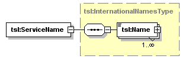
Abbildung 19: Name des TSP-Dienstes
Die Anforderung TIP1-A_4102 sorgt dafür, dass die jeweiligen Einträge für X.509-Zertifikate in einfach lesbarer Form vorliegen.
Für die X.509-Aussteller-CA-, OCSP-Signer- und CRL-Signer- Zertifikate des TI-Vertrauensraumes sowie für weitere (unspecified) TI-Zertifikate ergibt sich dadurch auch eine eindeutige Benennung der Einträge.
Der Eintrag der digitalen Identität wird mit dem Element ServiceDigitalIdentity dargestellt.
TIP1-A_4103
Der TSL-Dienst MUSS ein Element DigitalId in das Element ServiceDigitalIdentity einfügen.
<=
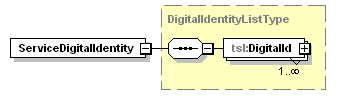
Abbildung 20: Eintrag der digitalen Identität
TIP1-A_4104
Der TSL-Dienst MUSS für jeden TSP-Dienst ein Element X509Certificate oder ein Element Other (für DNSSEC-Trustanchor, CVC-Root-CA-Zertifikate oder Cross-CV-Zertifikate) in das Element DigitalId einfügen.
Der TSL-Dienst MUSS das ihm gelieferte X.509-Zertifikat des TSP-Dienstes in das Element X509Certificate eintragen.
Der Status des TSP-Dienstes wird im Element ServiceStatus abgebildet. Der Dienststatus wird mit einem URI gemäß [ETSI_TS_102_231_V3.1.2#D.2] dargestellt.
TIP1-A_4105
Der TSL-Dienst MUSS im Element ServiceStatus einen URI einfügen, welcher einem der in [gemSpec_PKI#Tab_PKI_271] aufgeführten Werte entspricht.
<=Im Element StatusStartingTime wird das Datum und die Uhrzeit spezifiziert zu dem der Status gesetzt wurde.
TIP1-A_4106
Der TSL-Dienst MUSS in jedes Element ServiceInformation ein Element ServiceSupplyPoints mit mindestens einem Unterelement ServiceSupplyPoint einfügen, welches einen von der gematik bezeichneten URI enthält.
Der URI steht für die Adresse eines OCSP-Responders oder CRL-Verteilungspunktes.
Der URI kann in bestimmten Fällen (z. B. beim DNSSEC Trust Anchor) auch für einen Platzhalter stehen (z.B. http://ocsp00.gematik.invalid/not-used).
Es bestehen die folgenden Möglichkeiten hinsichtlich URI im ServiceSupplyPoint-Element:
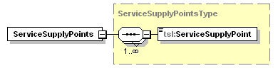
Abbildung 21: Struktur zur Ermittlung der Adresse des Validierungsdienstes
Der TSL-Dienst verwendet das Element ServiceInformationExtensions. Für dieses Element und seinen Inhalt gelten die folgenden Ausführungen:
Der Elementtyp ExtensionType beschreibt eine Erweiterung der TSL entsprechend den Erweiterungen in X.509-Zertifikaten. Nach [ETSI_TS_102_231_V3.1.2] muss ein Element Extension deshalb mit dem Attribut „Critical“ ausgestattet werden (mit einem Boolean-Wert, welcher in der gematik-TSL immer auf false gesetzt wird).
Die Erweiterung spiegelt sich in dem Paar aus ExtensionOID und ExtensionValue bzw. ExtensionValues wieder. Eine Liste mit Paaren aus "OID" und "Value" wird von der gematik bereitgestellt. Die OIDs werden dem Dokument [gemSpec_OID] entnommen.
TIP1-A_4107
Der TSL-Dienst MUSS für jeden TSP-Dienst-Eintrag das Element ServiceInformationExtensions eintragen.
<=TIP1-A_4108
Der TSL-Dienst MUSS mindestens ein Element Extension in das Element ServiceInformationExtensions einfügen. Falls keine Angaben vorhanden sind, MUSS der TSL-Dienst das Element ServiceInformationExtensions mit dem Platzhalter-OID (oid_tsl_placeholder) gemäß [gemSpec_OID#Tab_PKI_407] erstellen.
<=TIP1-A_4109
Der TSL-Dienst MUSS dem Attribut „Critical“ eines Elementes Extension den Wert „false“ zuweisen.
<=
TIP1-A_4110
Der TSL-Dienst MUSS ein Element Extension gemäß Tab_PKI_713 befüllen.
Der TSL-Dienst MUSS die Inhalte dieser Unterelemente gemäß den Vorgaben der gematik setzen.
Der TSL-Dienst MUSS ein Element ExtensionOID gemäß Tab_PKI_714, ein Element ExtensionValue gemäß Tab_PKI_715 und Element ExtensionValues gemäß Tab_PKI_716 befüllen.
Der TSL-Dienst MUSS den Wert für ein ExtensionValue-Element auf die gematik-spezifische Referenz (startend mit „oid_“) gemäß [gemSpec_OID] setzen, falls der Wert für ein ExtensionValue-Element nicht spezifisch vorgegeben ist.
Tabelle 8: Tab_PKI_713 TSL-Datei – Element Extension
| Bezeichnung |
Extension |
|---|---|
| Beschreibung |
Siehe [ETSI_TS_102_231_V3.1.2#B.4.9] |
| Optional |
Nein |
| Wertebereich |
Das Element muss mit einer Sequenz aus
|
Tabelle 9: Tab_PKI_714 TSL-Datei – Element ExtensionOID
| Bezeichnung |
ExtensionOID |
|---|---|
| Beschreibung |
Das Element muss gemäß den Vorgaben der gematik mit einer OID in der Punkt-Notation gemäß [gemSpec_OID] befüllt werden. |
| Optional |
Nein |
| Wertebereich |
Entspricht dem Wertebereich vom XML-Datentyp „string“ mit Pattern „[1-9\.]+“. |
Tabelle 10: Tab_PKI_715 TSL-Datei – Element ExtensionValue
| Bezeichnung |
ExtensionValue |
|---|---|
| Beschreibung |
Dieses Element enthält den Wert für die OID, welcher im Schwesterelement ExtensionOID enthalten ist. |
| Optional |
Ja |
| Wertebereich |
Entspricht dem Wertebereich vom XML-Datentyp „string“. |
Tabelle 11: Tab_PKI_716 TSL-Datei – Element ExtensionValues
| Bezeichnung |
ExtensionValues |
|---|---|
| Beschreibung |
Alternative zum Element ExtensionValue |
| Optional |
Ja |
| Wertebereich |
Entspricht dem XML-Datentyp „complexType“. |
Im Hinblick auf den Wirkbetrieb muss der TSL-Dienst die technischen Voraussetzungen beachten, die nötig sind, um einen TI-Vertrauensankerwechsel innerhalb einer Schlüsselgeneration (RSA oder ECDSA) durchführen zu können.
Der TI-Vertrauensankerwechsel erfolgt mittels eines TSP-Diensteintrags mit spezifischen Eigenschaften (Update-Parametern). Neben den allgemeinen Anforderungen an den TSL-Dienst in Kap. 7.3 gelten die speziellen Anforderungen in [gemSpec_PKI#GS-A_4644].
Ein Vertrauensankerwechsel zum Übergang (Migration) auf eine neue Schlüsselgeneration wird über andere Mechanismen (Initialisierung eines neuen Vertrauensankers z.B. über Cross-Zertifikate) realisiert. Siehe dazu die Hinweise in Kap. 2.3 und in [gemSpec_PKI#Kap.8.1.1]
Konnektoren (und ggf. weitere Systeme), die QES-Zertifikate validieren, müssen diese gegen die von der Bundesnetzagentur (BNetzA) bereitgestellte Vertrauensliste (BNetzA-VL) überprüfen. Die Prüfung gegen eine solche Vertrauensliste wird durch [eIDAS] vorgegeben. Um diese Prüfung zu ermöglichen, werden die dafür notwendigen Daten zur BNetzA innerhalb der TI in der TSL bereitgestellt.
Zur Einbringung der Vertrauensanker der BNetzA-VL wird die TSL als Transportmedium verwendet. Die Daten zur sicheren Übertragung der BNetzA-VL-Signer-Zertifikate als Vertrauensanker der BNetzA-VL werden deshalb in der TSL als speziell markierter TSP-Dienst in die Struktur der TSL-Datei eingebettet (mit dem Namen „Bundesnetzagentur“ als Betreiber der BNetzA-VL).
Auch die Downloadpunkte der BNetzA-VL in der TI werden in diesem TSP-Dienst-Eintrag veröffentlicht.
TIP1-A_6761
Der TSL-Dienst MUSS für die Bundesnetzagentur (als Herausgeberin der BNetzA-VL) ein Element TrustServiceProvider einfügen und dieses wie folgt befüllen:
<TrustServiceProvider>
<TSPInformation>
<TSPName>
<Name xml:lang="de">Bundesnetzagentur für Elektrizität, Gas, Telekommunikation, Post und Eisenbahnen</Name>
</TSPName>
<TSPTradeName>
<Name xml:lang="de">Bundesnetzagentur</Name>
</TSPTradeName>
<TSPAddress>
<PostalAddresses>
<PostalAddress xml:lang="de">
<StreetAddress>Canisiusstr. 21</StreetAddress>
<Locality>Mainz</Locality>
<StateOrProvince>NW</StateOrProvince>
<PostalCode>55122</PostalCode>
<CountryName>DE</CountryName>
</PostalAddress>
</PostalAddresses>
<ElectronicAddress>
<URI>mailto:eIDAS@bnetza.de</URI>
</ElectronicAddress>
</TSPAddress>
<TSPInformationURI>
<URI xml:lang="de">http://www.bundesnetzagentur.de</URI>
</TSPInformationURI>
</TSPInformation>
<TSPServices>
{Befüllung gemäß weiterer Anforderungen}
</TSPServices>
<TrustServiceProvider>
Hinweis: Die (elektronischen und physischen) Adressangaben entsprechen denjenigen in der BNetzA-VL.
TIP1-A_6762
Der TSL-Dienst MUSS für die Bundesnetzagentur (als Herausgeberin der BNetzA-VL) ein Element TSPService aufnehmen.
TIP1-A_6763
Der TSL-Dienst MUSS für die BNetzA-VL-Signer in die TSL im Element ServiceTypeIdentifier den dafür in [TIP1-A_4099] spezifizierten URI einsetzen.
<=TIP1-A_6764
Der TSL-Dienst MUSS für die BNetzA-VL in die TSL im Element ServiceName mindestens ein Element Name einfügen.
<= Hinweis: Die Vorgaben zum Element Name für Service-Einträge mit X.509-Zertifikaten sind in den Anforderungen [TIP1-A_4100] und [TIP1-A_4102] spezifiziert und wird somit normalerweise vom SubjectDN des einen X.509-Zertifikats abgeleitet.
Zu beachten ist dabei allerdings, dass der Service-Eintrag für die BNetzA-VL mehrere X.509-Zertifikate enthält.
TIP1-A_6765
Der TSL-Dienst MUSS für jedes BNetzA-VL-Signer-Zertifikat im Element ServiceDigitalIdentity ein Element DigitalId mit einem Element X509Certificate einfügen und dort das X.509-BNetzA-VL-Signer-Zertifikat in die TSL eintragen. Siehe dazu auch [TIP1-A_4104].
<=Das Element ServiceStatus wird gemäß Anforderung [TIP1-A_4105] und somit auch gemäß [gemSpec_PKI#Tab_PKI_271] gesetzt.
TIP1-A_6766
Der TSL-Dienst MUSS ein Element ServiceSupplyPoints für die BNetzA-VL in die TSL einfügen.
Der TSL-Dienst MUSS ein Element ServiceSupplyPoint einfügen und dieses mit der primären TI-Download-Adresse der BNetzA-VL befüllen.
Der TSL-Dienst MUSS ein Element ServiceSupplyPoint einfügen und dieses mit der sekundären TI-Download-Adresse der BNetzA-VL befüllen.
TIP1-A_6767
Der TSL-Dienst MUSS für die BNetzA-VL im Element ServiceInformationExtensions ein Element Extension eintragen, welches den Platzhalter-OID (oid_tsl_placeholder) gemäß [gemSpec_OID#Tab_PKI_407] enthält.
<= Im Rahmen der QES-Zertifikatsprüfung benötigen zertifikatsprüfende Komponenten neben den Informationen in der BNetzA-VL zu CA-Zertifikaten von VDAs auch Referenzen zu deren OCSP-Respondern in der TI, wenn diese von in der TI zugelassenen VDAs bereitgestellt wurden. Die URLs der OCSP-Responder in der TI werden in der TSL anhand von Einträgen im Feld AdditionalServiceInformation als Tupel der Elemente URI und InformationValue innerhalb des Services mit ServiceTypeIdentifier für die BNetzA-VL-Signer realisiert.
TIP1-A_7219
Der TSL-Dienst MUSS für jede von der gematik bereitgestellte OCSP-Responder-URL für QES-Zwecke je ein Element AdditionalServiceInformation innerhalb des ServiceInformationExtensions Elementes als Tupel der Elemente URI und InformationValue erstellen.
Das URI-Element MUSS dabei jeweils folgenden Eintrag enthalten: <URI>http://uri.etsi.org/TrstSvc/TrustedList/SvcInfoExt/ForeSignatures/</URI>.
Das InformationValue-Element MUSS jeweils den von der gematik bereitgestellten Text-Eintrag als String (URLs getrennt durch Leerzeichen) enthalten. <=
Der Text-Eintrag für das InformationValue-Element enthält demnach als Umsetzung der OCSP-Responder-Adresse die Quell-URL (aus dem Zertifikat in der Extension AIA) und die Ziel-URL (URL aus dem Namensraum der TI, unter der der OCSP-Responder in der TI erreichbar ist).
Ein TSL-Eintrag für die BNetzA-VL Referenzierung inklusive der URLs für OCSP-Responder für VDAs in der TI sieht also dergestalt aus:
<TrustServiceProvider>
<TSPInformation>
<TSPName>
<Name xml:lang="de">Bundesnetzagentur für Elektrizität, Gas, Telekommunikation, Post und Eisenbahnen</Name>
</TSPName>
<TSPTradeName>
<Name xml:lang="de">Bundesnetzagentur</Name>
</TSPTradeName>
<TSPAddress>
<PostalAddresses>
<PostalAddress xml:lang="de">
<StreetAddress>Canisiusstr. 21</StreetAddress>
<Locality>Mainz</Locality>
<StateOrProvince>NW</StateOrProvince>
<PostalCode>55122</PostalCode>
<CountryName>DE</CountryName>
</PostalAddress>
</PostalAddresses>
<ElectronicAddress>
<URI>mailto:eIDAS@bnetza.de</URI>
</ElectronicAddress>
</TSPAddress>
<TSPInformationURI>
<URI xml:lang="en">http://www.bundesnetzagentur.de</URI>
</TSPInformationURI>
</TSPInformation>
<TSPServices>
<TSPService>
<ServiceInformation>
<ServiceTypeIdentifier>
http://uri.telematik/TrstSvc/Svctype/TrustedList/schemerules/DE
</ServiceTypeIdentifier>
<ServiceName>
<Name xml:lang="de">
{z.B.“CN=14R-TSL 1:PN,O=Bundesnetzagentur,C=DE”}
</Name>
</ServiceName>
<ServiceDigitalIdentity>
<DigitalId>
<X509Certificate>
{Base64-codiertes BNetzA-VL-Signer-Zertifikat}
</X509Certificate>
</DigitalId>
{weitere DigitalId-Elemente mit Signer-Zertifikaten}
</ServiceDigitalIdentity>
<ServiceStatus>
http://uri.etsi.org/TrstSvc/Svcstatus/inaccord
</ServiceStatus>
<StatusStartingTime>
{z.B. “ 2016-07-01T00:00:01Z”}
</StatusStartingTime>
<ServiceSupplyPoints>
<ServiceSupplyPoint>
{primäre TI-Download-Adresse der BNetzA-VL}
</ServiceSupplyPoint>
<ServiceSupplyPoint>
{sekundäre TI-Download-Adresse der BNetzA-VL}
</ServiceSupplyPoint>
</ServiceSupplyPoints>
<ServiceInformationExtensions>
<Extension Critical="false">
<ExtensionOID>{oid_tsl_placeholder}</ExtensionOID>
<ExtensionValue>oid_tsl_placeholder</ExtensionValue>
</Extension>
<Extension Critical="false">
<AdditionalServiceInformation>
<URI>
http://uri.etsi.org/TrstSvc/TrustedList/SvcInfoExt/ForeSignatures
</URI>
<InformationValue>
{TextFeld: Quell-URL1 Ziel-URL1}
</InformationValue>
</AdditionalServiceInformation>
<AdditionalServiceInformation>
<URI>
http://uri.etsi.org/TrstSvc/TrustedList/SvcInfoExt/ForeSignatures
</URI>
<InformationValue>
{TextFeld: Quell-URL2 Ziel-URL2}
</InformationValue>
</AdditionalServiceInformation>
{ggf. weitere AdditionalServiceInformation-Elemente}
</Extension>
</ServiceInformationExtensions>
</ServiceInformation>
</TSPService>
</TSPServices>
<TrustServiceProvider>
Für die Test- und Referenzumgebung wird durch die gematik eine separate BNetzA-VL-Datei für Testzwecke (Pseudo-BNetzA-VL) bereitgestellt.
Die Pseudo-BNetzA-VL unterscheidet sich von der originalen BNetzA-VL wenigstens in folgenden Punkten:
Darüber hinaus kann die Pseudo-BNetzA-VL von der originalen BNetzA-VL auch in weiteren Punkten abweichen, die nicht für die in der Produktivumgebung spezifizierten Prüfschritte relevant sind.
In der Telematikinfrastruktur (TI) wird DNSSEC (Domain Name System Security Extensions) für die Namensauflösung mit einem eigenen DNSSEC Trust Anchor in der Domäne „telematik“ implementiert. Die Einzelheiten dieser Implementierung sind in [gemSpec_Net] beschrieben und spezifiziert.
Neben der üblichen Vorgehensweise zur sicheren Einbringung des DNSSEC Trust Anchors der TI in eine Komponente (initiale Einbringung, Update gemäß DNSSEC-Protokoll) wird (für Komponenten, die lange offline waren,) die TSL-Datei als alternatives Transportmedium genutzt. Die Daten zur sicheren Übertragung des DNSSEC Trust Anchors der TI werden deshalb als speziell markierter TSP-Dienst in die Struktur der TSL-Datei eingebettet (mit dem Betreiber des Namensdienstes als TrustServiceProvider).
Die Angaben zum DNSSEC Trust Anchor der TI liefert die gematik als XML-Fragment dem Anbieter des TSL-Dienstes über die Schnittstellen des Funktionsmerkmals TSL_Eintragsverwaltung. Das Einbringen des DNSSEC Trust Anchors der TI erfolgt also analog demjenigen eines CA-Zertifikats.
Die Struktur des XML-Fragmentes richtet sich nach den Vorgaben von IANA. Ein Beispiel für eine solche Struktur (dort für die DNS-Root-Zone) wird unter http://data.iana.org/root-anchors/root-anchors.xml bereitgestellt.
TIP1-A_5122
Der TSL-Dienst MUSS für den DNSSEC Trust Anchor der TI im Element ServiceTypeIdentifier den dafür in [TIP1-A_4099] spezifizierten URI einsetzen.
<=TIP1-A_5123
Der TSL-Dienst MUSS für den DNSSEC Trust Anchor der TI im Element ServiceName ein Element Name einfügen, welches den Inhalt „CN=DNSSEC-Trustanchor, DC=telematik“ enthält.
<=TIP1-A_5124
Der TSL-Dienst MUSS für den DNSSEC Trust Anchor der TI im Element DigitalId (im Element ServiceDigitalIdentity) ein Element Other einfügen. Der TSL-Dienst MUSS in dieses Other-Element ein XML-Fragment gemäß [gemSpec_Net#GS-A_4815] eintragen.
<=TIP1-A_5125
Der TSL-Dienst MUSS für den DNSSEC Trust Anchor der TI im Element ServiceStatus den URI gemäß [gemSpec_PKI#Tab_PKI_271] für einen Dienst, der in Betrieb ist, einsetzen.
<=TIP1-A_5126
Der TSL-Dienst SOLL für den DNSSEC Trust Anchor der TI im Element StatusStartingTime den Zeitpunkt, ab dem der DNSSEC Trust Anchor in Betrieb ist, einsetzen.
<=Hinweis: Es wird auch ein Element ServiceSupplyPoint gesetzt und mit einem Platzhalter-URL befüllt. Siehe dazu [TIP1-A_4106] und die nachfolgenden Erklärungen.
TIP1-A_5128
Der TSL-Dienst MUSS für den DNSSEC Trust Anchor der TI im Element ServiceInformationExtensions ein Element Extension eintragen, welches den Platzhalter-OID (oid_tsl_placeholder) gemäß [gemSpec_OID#Tab_PKI_407] enthält.
<=Der öffentliche Schlüssel der CVC-Root-CA ist der CV-Vertrauensanker einer Chipkarte der TI für die Card-To-Card-Authentisierung (C2C). Im Verlaufe der Zeit (i. d. R. alle zwei Jahre) werden neue CVC-Root-CA-Instanzen (Root-Versionen) aufgesetzt und als Vertrauensanker eingesetzt. Somit sind jeweils Chipkarten mit unterschiedlichen gültigen CVC-Root-CA-Schlüsseln im Feld. Um zwischen derartigen Karten eine erfolgreiche C2C-Authentisierung zu ermöglichen, stellen sich zeitlich aufeinander folgende CVC-Root-CA-Instanzen Cross-CV-Zertifikate aus (s. [gemSpec_CVC_Root#5.4.7]).
Die TSL wird genutzt, um diese Cross-CV-Zertifikate (und selbstsignierte CVC-Root-CA-Zertifikate) zu den die C2C-Authentisierung steuernden Komponenten (Konnektor, Mobiles Kartenterminal) zu transportieren. Diese Komponenten halten die Cross-CV-Zertifikate für eine C2C-Authentisierung vor.
In der TSL werden spezifische Einträge für diesen Zweck erstellt:
TIP1-A_5990
Der TSL-Dienst MUSS
(a) die in die TSL aufzunehmenden CV-Root-CA- und Cross-CV-Zertifikate vom offiziellen Downloadpunkt der Internetseite des Anbieters CVC-Root-CA beziehen,
(b) den Fingerprint des in den Zertifikaten enthaltenen öffentlichen Schlüssels per Briefpost vom Anbieter CVC-Root-CA anfordern,
(c) den Fingerprint des öffentlichen Schlüssels vor der Aufnahme der entsprechenden CV-Root-CA- und Cross-CV-Zertifikate erfolgreich prüfen.
<=TIP1-A_5963
Der TSL-Dienst MUSS für ein CVC-Root-CA-Zertifikat oder ein Cross-CV-Zertifikat im Element „ServiceTypeIdentifier“ den dafür in [TIP1-A_4099] spezifizierten URI einsetzen.
<=
TIP1-A_5964
Der TSL-Dienst MUSS für ein CVC-Root-CA-Zertifikat oder für ein Cross-CV-Zertifikat im Element „ServiceName“ ein Element „Name“ einfügen, welches den Inhalt „CHR={CHR}, CAR={CAR}“ gemäß [ und ] enthält.
Der TSL-Dienst MUSS die Werte {CHR} und {CAR} gemäß dem CHR-Wert und dem CAR-Wert des CVC-Root-CA-Zertifikats oder des Cross-CV-Zertifikats als 11 Zeichen (5 Buchstaben und 6 Ziffern) lange Strings entsprechend [gemSpec_PKI#Tab_PKI_266] eintragen.
Ist {CHR} gleich {CAR}, handelt es sich um ein CVC-Root-CA-Zertifikat.
<=
Hinweis: Gemäß [gemSpec_PKI#Tab_PKI_266] beträgt die Länge eines CAR- (und somit auch eines CHR-Wertes in einem CA-Zertifikat) 8 Byte. Die letzten 3 Byte enthalten 6 „Binary Coded Decimals“ (BCD), also in Halbbytes codierte dezimale Ziffern. Diese Ziffern werden im Name-Element der TSL-Datei als normale Characters codiert.
TIP1-A_5965
Der TSL-Dienst MUSS für ein CVC-Root-CA-Zertifikat oder für ein Cross-CV-Zertifikat im Element DigitalId (im Element ServiceDigitalIdentity) ein Element „Other“ einfügen. Der TSL-Dienst MUSS in dieses Other-Element ein CVCertificate-Element einfügen, welches das Base64-codierte CV-Zertifikat wie folgt aufnimmt.
<Other>
<CVCertificate>
Base64-codiertes CV-Zertifikat}
</CVCertificate>
</Other>
TIP1-A_5966
Der TSL-Dienst MUSS für ein CVC-Root-CA-Zertifikat oder für ein Cross-CV-Zertifikat im Element ServiceStatus den URI gemäß [gemSpec_PKI#Tab_PKI_271] für einen Dienst, der in Betrieb ist, einsetzen.
<=TIP1-A_5967
Der TSL-Dienst MUSS für ein CVC-Root-CA-Zertifikat oder für ein Cross-CV-Zertifikat im Element ServiceInformationExtensions ein Element Extension eintragen, welches die OID (oid_cv_cert) bzw. OID (oid_cv_rootcert für ein CVC-Root-Zertifikat) gemäß [gemSpec_OID# Tab_PKI_407] enthält.
<=Ein TSL-Eintrag für ein Cross-CV-Zertifikat sieht also dergestalt aus:
<TSPService>
<ServiceInformation>
<ServiceTypeIdentifier>
http://uri.telematik/TrstSvc/Svctype/CA/CVC </ServiceTypeIdentifier>
<ServiceName>
<Name xml:lang="DE">
CHR={CHR}, CAR={CAR}
</Name>
</ServiceName>
<ServiceDigitalIdentity>
<DigitalId>
<Other>
<CVCertificate>
{Base64-codiertes CV-Zertifikat}
</CVCertificate>
</Other>
</DigitalId>
</ServiceDigitalIdentity>
<ServiceStatus>
http://uri.etsi.org/TrstSvc/Svcstatus/inaccord
</ServiceStatus>
<StatusStartingTime>
2014-02-27T00:00:00Z
</StatusStartingTime>
<ServiceSupplyPoints>
<ServiceSupplyPoint>
http://ocsp00.gematik.invalid/not-used
</ServiceSupplyPoint>
</ServiceSupplyPoints>
<ServiceInformationExtensions>
<Extension Critical="false">
<ExtensionOID>
{oid_cv_cert}
</ExtensionOID>
<ExtensionValue>
oid_cv_cert
</ExtensionValue>
</Extension>
</ServiceInformationExtensions>
</ServiceInformation>
</TSPService>
Für Test- und Referenzumgebungen wird ein separater TI-Vertrauensraum bereitgestellt. Dieser wird in einer eigenen Test-TSL-Datei technisch abgebildet.
Die folgenden Ausführungen beschreiben die Anforderungen, welche an die Test-TSL-Datei abweichend von der Produktiv-TSL-Datei gestellt werden.
TIP1-A_4111
Der TSL-Dienst MUSS in der TSL für die Test- und Referenzumgebungen das Element SchemeOperatorName wie folgt befüllen:
<SchemeOperatorName>
<Name xml:lang="DE">TEST-ONLY gematik Scheme</Name>
</SchemeOperatorName>
TIP1-A_4112
Der TSL-Dienst MUSS in der TSL für die Test- und Referenzumgebungen das Element SchemeName wie folgt befüllen:
<SchemeName>
<Name xml:lang="DE">TEST-ONLY gematik TSL Scheme</Name>
</SchemeName>
TIP1-A_4113
Der TSL-Dienst MUSS in der TSL für die Test- und Referenzumgebungen das Element „PolicyOrLegalNotice“ wie folgt befüllen:
<PolicyOrLegalNotice>
<TSLLegalNotice xml:lang="DE">TEST-ONLY Abschnitt der Certificate Policy der gematik, OID {oid_policy_gem_or_cp}</TSLLegalNotice>
</PolicyOrLegalNotice>
Der TSL-Dienst MUSS den OID (oid_policy_gem_or_cp) der Policy [gemRL_TSL_SP_CP] dem Dokument [gemSpec_OID# Tab_PKI_404] entnehmen.
TIP1-A_4114
Der TSL-Dienst MUSS in der TSL-Datei für die Test- und Referenzumgebungen im Element "PointersToOtherTSL“ die Zugriffsadressen für die jeweilige TSL-Datei integrieren. Er MUSS dieses Element wie folgt befüllen:
<PointersToOtherTSL>
<OtherTSLPointer>
<TSLLocation>{URL für Test-TSL-Datei Primary Location}</TSLLocation>
<AdditionalInformation>
<TextualInformation xml:lang="DE">{oid_tsl_p_loc}</TextualInformation>
</AdditionalInformation>
</OtherTSLPointer>
<OtherTSLPointer>
<TSLLocation>{URL für Test-TSL-Datei Backup Location}</TSLLocation>
<AdditionalInformation>
<TextualInformation xml:lang="DE">{oid_tsl_b_loc}</TextualInformation>
</AdditionalInformation>
</OtherTSLPointer>
</PointersToOtherTSL>
Der TSL-Dienst MUSS sowohl eine primäre als auch eine Backup-Download-Adresse vorsehen.
Der TSL-Dienst MUSS den OID der TSLLocation (oid_tsl_p_loc, oid_tsl_b_loc) dem Dokument [gemSpec_OID#3.6] entnehmen.
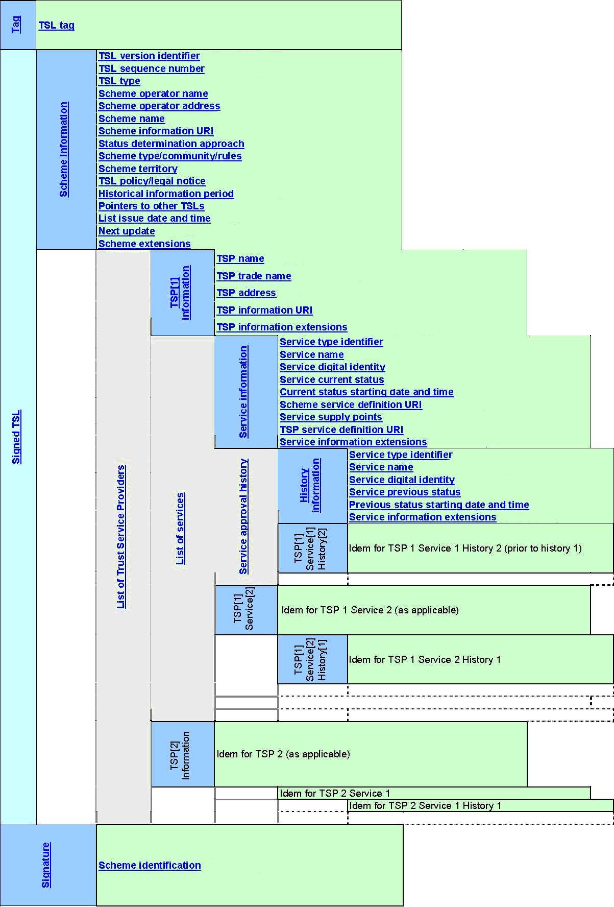
Abbildung 22: Struktur der TSL gemäß ETSI_TS_102_231
Sonstige vertrauenswürdige Zertifikate in der TI, die nicht an anderer Stelle der TSL definiert und hinterlegt sind, werden mittels des Unspecified ServiceType hinterlegt. Hierzu gehören beispielsweise die Zertifikate für das SGD-HSM (Schlüsselgenerierungsdienst HSM).
Die Bereitstellungen solcher Zertifikate in der TSL erfolgen als TSP-Dienst und werden einem Betreiber (Trust Service Provider – siehe Kap. ) zugewiesen. Bezüglich des TSP-Dienstes sind die Vorgaben aus dem Kapitel zu berücksichtigen. Gemäß ist der ServiceTypeIdentifier „unspecified“ dafür zu verwenden.
A_17931
Der TSL-Dienst MUSS für Unspecified-Dienste im Element ServiceTypeIdentifier den dafür in [TIP1-A_4099] spezifizierten URI einsetzen.
<=
A_17932
Der TSL-Dienst MUSS für Unspecified-Dienste im Element ServiceName ein Element Name einfügen, welches vom SubjectDN seines X.509-Zertifikates abgeleitet ist. (vgl. [TIP1-A_4100] und [TIP1-A_4102]) <=
A_17933
Der TSL-Dienst MUSS für Unspecified-Dienste im Element DigitalId (im Element ServiceDigitalIdentity) ein Element X509Certificate einfügen. <=
A_17934
Der TSL-Dienst MUSS für Unspecified-Dienste im Element ServiceStatus den URI gemäß [gemSpec_PKI#Tab_PKI_271] für einen Dienst, der in Betrieb ist, einsetzen. <=
A_17935
Der TSL-Dienst SOLL für Unspecified-Dienste im Element StatusStartingTime den Zeitpunkt, ab dem der Unspecified Dienst in der TI in Betrieb ist, einsetzen.
<=
Hinweis: Es wird auch ein Element ServiceSupplyPoint gesetzt und mit einem Platzhalter-URL befüllt. Siehe dazu [TIP1-A_4106] und die nachfolgenden Erklärungen.
A_17936
Der TSL-Dienst MUSS für Unspecified-Dienste im Element ServiceInformationExtensions ein Element Extension eintragen, welches den Platzhalter-OID (oid_tsl_placeholder) gemäß [gemSpec_OID#Tab_PKI_407] enthält.
<=
| Kürzel |
Erläuterung |
|---|---|
| BSI |
Bundesamt für Sicherheit in der Informationstechnik |
| CA |
Certification Authority |
| CP |
Certificate Policy |
| CRL |
Certificate Revocation Lists |
| DNSSEC |
Domain Name System Security Extensions |
| ETSI |
Europäisches Institut für Telekommunikationsnormen |
| EU-LOTL |
List of Trusted Lists der Europäischen Kommission |
| HSM |
Hardware Security Module |
| HTTP |
HyperText Transfer Protocol |
| HTTPS |
HyperText Transfer Protocol Secure |
| IANA |
Internet Assigned Numbers Authority |
| MPLS |
Multi Protocol Label Switching |
| OCSP |
Online Certificate Status Protokoll |
| PKI |
Public Key Infrastructure |
| PU |
Produktionsumgebung |
| SMC-B |
Secure Module Card Typ B |
| SM-K |
Security-Modul-Konnektor |
| SM-KT |
Security-Modul-Kartenterminal |
| SGD-HSM |
Schlüsselgenerierungsdienst HSM |
| SP |
Service Provider |
| TI |
Telematikinfrastruktur |
| TSL |
Trust-service Status List |
| TSP |
Trust Service Provider |
| VPN |
Virtual Private Network |
| XML |
Extensible Markup Language |
| WANDA Basic | Weitere Anwendungen für den Datenaustausch ohne Nutzung der zentralen Dienste der TI oder derer kryptografischen Identitäten |
| WANDA Smart | Weitere Anwendungen für den Datenaustausch mit Nutzung der zentralen Dienste der TI oder derer kryptografischen Identitäten für eigene Anwendungszwecke |
Das Glossar wird als eigenständiges Dokument (vgl. [gemGlossar]) zur Verfügung gestellt.
Die nachfolgende Tabelle enthält die Bezeichnung der in dem vorliegenden Dokument referenzierten Dokumente der gematik zur Telematikinfrastruktur. Der mit der vorliegenden Version korrelierende Entwicklungsstand dieser Konzepte und Spezifikationen wird pro Release in einer Dokumentenlandkarte definiert; Version und Stand der referenzierten Dokumente sind daher in der nachfolgenden Tabelle nicht aufgeführt. Deren zu diesem Dokument jeweils gültige Versionsnummern sind in der aktuellen, von der gematik veröffentlichten Dokumentenlandkarte enthalten, in der die vorliegende Version aufgeführt wird.
| [Quelle] |
Herausgeber: Titel |
|---|---|
| [gemGlossar] |
gematik: Glossar der Telematikinfrastruktur |
| [gemKPT_Arch_TIP] |
gematik: Konzept Architektur der TI-Plattform |
| [gemKPT_PKI_TIP] |
gematik: Konzept PKI der TI-Plattform |
| [gemRL_Betr_TI] |
gematik: Übergreifende Richtlinien zum Betrieb der TI |
| [gemRL_TSL_SP_CP] |
gematik: Certificate Policy - Gemeinsame Zertifizierungsrichtlinie für Teilnehmer der gematik-TSL |
| [gemSpec_Net] |
gematik: Spezifikation Netzwerk |
| [gemSpec_Perf] |
gematik: Spezifikation Performance TI-Plattform |
| [gemSpec_PKI] |
gematik: Spezifikation PKI |
| [gemSpec_Krypt] |
gematik: Spezifikation kryptographischer Algorithmen in der TI |
| [gemSpec_OID] |
gematik: Spezifikation Festlegung von OIDs |
| [gemSpec_DS_Anbieter] |
gematik: Spezifikation Datenschutz- und Sicherheitsanforderungen der TI an Anbieter |
| [gemSpec_X.509_TSP] |
gematik: PKI für X.509-Zertifikate: Spezifikation Trust Service Provider X.509 |
| [Quelle] |
Herausgeber (Erscheinungsdatum): Titel |
|---|---|
| [BSI] |
BSI (2005): IT-Grundschutz-Kataloge (12. Ergänzungslieferung 2011) https://gsb.download.bva.bund.de/BSI/ITGSK12EL/IT-Grundschutz-Kataloge-12-EL.pdf |
| [ETSI_TS_102_231_V3.1.2] |
ETSI (Dezember 2009): ETSI Technical Specification TS 102 231 (‘Provision of harmonized Trust Service Provider (TSP) status information’) – Version 3.1.2 |
| [ETSI_TS_119_612] |
ETSI (July 2015): ETSI TS 119 612 V2.1.1 ‘Electronic Signatures and Infrastructures (ESI); Trusted Lists’ |
| [EU_LOTL] |
https://ec.europa.eu/tools/lotl/eu-lotl.xml |
| [EVSSL] |
CA/Browser Forum: Guidelines For The Issuance And Management Of Extended Validation Certificates – Version 1.2, https://www.cabforum.org/Guidelines_v1_2.pdf |
| [PKCS#10] |
RSA Laboratories (26.05.2000): PKCS #10 v1.7: Certification Request Syntax Standard ftp://ftp.rsasecurity.com/pub/pkcs/pkcs-10/pkcs-10v1_7.pdf |
| [RFC2119] |
RFC 2119 (März 1997): Key words for use in RFCs to Indicate Requirement Levels S. Bradner, http://tools.ietf.org/html/rfc2119 |
| [RFC2616] |
RFC 2616 (Juni 1999): Hypertext Transfer Protocol -- HTTP/1.1, http://tools.ietf.org/html/rfc2616 |
| [ts_102231v030102_xsd.xsd] |
ETSI: XML-Schemadatei zu ETSI Technical Specification TS 102 231 (‘Provision of harmonized Trust Service Provider (TSP) status information’) – Version 3.1.2 |
Die XML Schema Language ist durch das W3-Konsortium standardisiert und ausführlich dokumentiert. Die Bedeutung der in diesem Dokument verwendeten grafischen Darstellungen wird im Folgenden kurz beschrieben.
Struktur - Sequenz
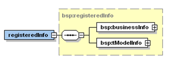
Das Achteck mit der horizontalen gepunkteten Linie stellt eine Sequenz (‚sequence’) dar. In diesem Beispiel bedeutet es, dass das Element registeredInfo aus den Elementen BusinessInfo und tModelInfo besteht. Alle drei Elemente gehören zum Namensraum BSP.
Das + Symbol am Ende der businessInfo und tModelInfo box bedeutet, dass das Diagramm hier verkürzt wurde und dass beide Elemente sich jeweils wieder aus weiteren, nicht angezeigten Elementen oder Attributen zusammensetzen.
Struktur - Auswahl
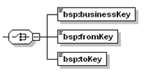
Das Auswahl (‚choice’) Symbol bedeutet, dass genau eines der aufgelisteten Elemente auftreten MUSS. In diesem Fall eines der Elemente businessKey, fromKey und toKey.
Keines der hier angegebenen Elemente wurde verkürzt dargestellt (dies ist dadurch ersichtlich, dass kein „+“ Symbol and die Box angehangen ist). Die horizontalen Linien am linken oberen Ende sind ein Indikator dafür, dass jedes Element nicht-leer ist.
Kardinalität – Null bis einmal
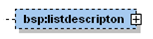
Ein Element, das durch eine gepunktete Linie dargestellt ist, ist OPTIONAL. Ist außerdem keines der weiter unten beschriebenen Kardinalitätsmerkmale angefügt, bedeutet es, dass dieses Element keinmal oder maximal einmal enthalten ist.
Kardinalität – Genau einmal
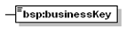
Eine durchgezogene Linie und keine weiteren Kardinalitätsmerkmale bedeutet, dass das Element genau einmal enthalten sein MUSS.
Kardinalität – Optional und wiederholt
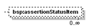
Das Element assertionStatusItem ist optional und KANN beliebig oft enthalten sein. Die genaue Anzahl, wie oft das Element verwendet werden kann, wird durch die angehängten Zahlen definiert, in diesem Beispiel Null (0) bis Unendlich (∞).
Kardinalität – Verpflichtend und wiederholt
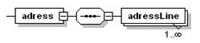
Das Element adressLine MUSS mindestens einmal und KANN beliebig oft enthalten sein.